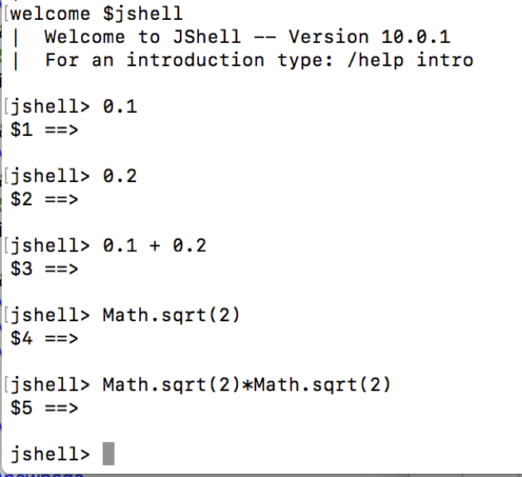
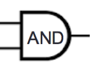
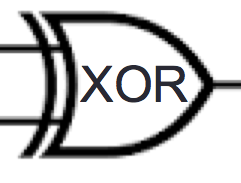
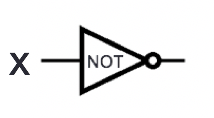
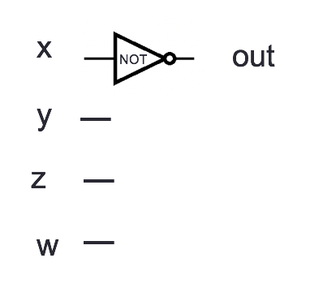
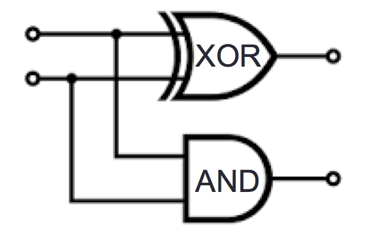
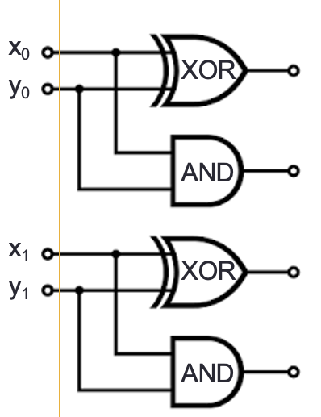
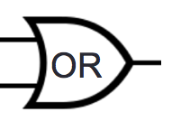
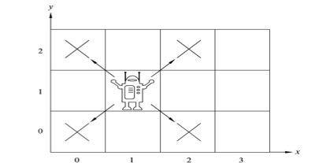

Wikimedia commons
https://creativecommons.org/licenses/by/2.0/legalcode
What data should we encode about each Netflix account holder to help us make effective recommendations?
In machine learning, clustering can be used to group similar data for prediction and recommendation. For example, each Netflix user’s viewing history can be represented as a \(n\)-tuple indicating their preferences about movies in the database, where \(n\) is the number of movies in the database. People with similar tastes in movies can then be clustered to provide recommendations of movies for one another. Mathematically, clustering is based on a notion of distance between pairs of \(n\)-tuples.
Pro-tip: the meaning of writing one element next to another like \(xy\) depends on the data-types of \(x\) and \(y\). When \(x\) and \(y\) are strings, the convention is that \(xy\) is the result of string concatenation. When \(x\) and \(y\) are numbers, the convention is that \(xy\) is the result of multiplication. This is (one of the many reasons) why is it very important to declare the data-type of variables before we use them.
Fill in the missing entries in the table:
| Set | Example elements in this set: |
|---|---|
| \(B\) | ACGU |
| \((\texttt{A}, \texttt{C})\) \((\texttt{U}, \texttt{U})\) | |
| \(B \times \{-1,0,1\}\) | |
| \(\{-1,0,1\} \times B\) | |
| \((0,0,0)\) | |
| \(\{\texttt{A}, \texttt{C}, \texttt{G}, \texttt{U}\} \circ \{\texttt{A}, \texttt{C}, \texttt{G}, \texttt{U}\}\) | |
| \(\texttt{G}\texttt{G}\texttt{G}\texttt{G}\) | |
Example: The absolute value function
Domain
Codomain
Rule
When the domain of a function is a recursively defined set, the rule assigning images to domain elements (outputs) can also be defined recursively.
Recall: The set of RNA strands \(S\) is defined (recursively) by: \[\begin{array}{ll} \textrm{Basis Step: } & \texttt{A}\in S, \texttt{C}\in S, \texttt{U}\in S, \texttt{G}\in S \\ \textrm{Recursive Step: } & \textrm{If } s \in S\textrm{ and }b \in B \textrm{, then }sb \in S \end{array}\] where \(sb\) is string concatenation.
Definition (Of a function, recursively) A function rnalen that computes the length of RNA strands in \(S\) is defined by: \[\begin{array}{llll} & & \textit{rnalen} : S & \to \mathbb{Z}^+ \\ \textrm{Basis Step:} & \textrm{If } b \in B\textrm{ then } & \textit{rnalen}(b) & = 1 \\ \textrm{Recursive Step:} & \textrm{If } s \in S\textrm{ and }b \in B\textrm{, then } & \textit{rnalen}(sb) & = 1 + \textit{rnalen}(s) \end{array}\]
The domain of rnalen is
The codomain of rnalen is
Example function application: \[rnalen(\texttt{A}\texttt{C}\texttt{U}) = \phantom{1+ rnalen(\texttt{A}\texttt{C}) = 1 + (1 + rnalen(\texttt{A}) ) = 1 + ( 1 + 1) = 3}\]
Extra example: A function basecount that computes the number of a given base \(b\) appearing in a RNA strand \(s\) is defined recursively:
\[\begin{array}{llll} & & \textit{basecount} : S \times B & \to \mathbb{N} \\ \textrm{Basis Step:} & \textrm{If } b_1 \in B, b_2 \in B & \textit{basecount}(~(b_1, b_2)~) & = \begin{cases} 1 & \textrm{when } b_1 = b_2 \\ 0 & \textrm{when } b_1 \neq b_2 \\ \end{cases} \\ \textrm{Recursive Step:} & \textrm{If } s \in S, b_1 \in B, b_2 \in B &\textit{basecount}(~(s b_1, b_2)~) & = \begin{cases} 1 + \textit{basecount}(~(s, b_2)~) & \textrm{when } b_1 = b_2 \\ \textit{basecount}(~(s, b_2)~) & \textrm{when } b_1 \neq b_2 \\ \end{cases} \end{array}\]
\(basecount(~(\texttt{A}\texttt{C}\texttt{U},\texttt{A})~) = basecount( ~(\texttt{A}\texttt{C}, \texttt{A})~) = basecount(~(\texttt{A}, \texttt{A})~) = 1\)
\(basecount(~(\texttt{A}\texttt{C}\texttt{U},\texttt{G})~) = basecount( ~(\texttt{A}\texttt{C}, \texttt{G})~) = basecount(~(\texttt{A}, \texttt{G})~) = 0\)
Extra example: The function which outputs \(2^n\) when given a nonnegative integer \(n\) can be defined recursively, because its domain is the set of nonnegative integers.
Modeling uses data-types that are encoded in a computer.
The details of the encoding impact the efficiency of algorithms we use to understand the systems we are modeling and the impacts of these algorithms on the people using the systems.
Case study: how to encode numbers?
Definition For \(b\) an integer greater than \(1\) and \(n\) a positive integer, the base \(b\) expansion of \(n\) is \[(a_{k-1} \cdots a_1 a_0)_b\] where \(k\) is a positive integer, \(a_0, a_1, \ldots, a_{k-1}\) are nonnegative integers less than \(b\), \(a_{k-1} \neq 0\), and \[n = \sum_{i=0}^{k-1} a_{i} b^{i}\]
Notice: The base \(b\) expansion of a positive integer \(n\) is a string over the alphabet \(\{x \in \mathbb{N} \mid x < b\}\) whose leftmost character is nonzero.
| Base \(b\) | Collection of possible coefficients in base \(b\) expansion of a positive integer |
|---|---|
| Binary (\(b=2\)) | \(\{0,1\}\) |
| Ternary (\(b=3\)) | \(\{0,1, 2\}\) |
| Octal (\(b=8\)) | \(\{0,1, 2, 3, 4, 5, 6, 7\}\) |
| Decimal (\(b=10\)) | \(\{0,1, 2, 3, 4, 5, 6, 7, 8, 9\}\) |
| Hexadecimal (\(b=16\)) | \(\{0,1, 2, 3, 4, 5, 6, 7, 8, 9, A, B, C, D, E, F\}\) |
| letter coefficient symbols represent numerical values \((A)_{16} = (10)_{10}\) | |
| \((B)_{16} = (11)_{10} ~~(C)_{16} = (12)_{10} ~~ (D)_{16} = (13)_{10} ~~ (E)_{16} = (14)_{10} ~~ (F)_{16} = (15)_{10}\) |
Examples:
\((1401)_{2}\)
\((1401)_{10}\)
\((1401)_{16}\)
procedure \(\textit{half}\)(\(n\): a positive integer) \(r\) := \(0\) while \(n\) > \(1\) \(r\) := \(r + 1\) \(n\) := \(n - 2\) return \(r\) \(\{ r~\textrm{holds the result of the operation}\}\)
2
| \(n\) | \(r\) | \(n > 1\)? |
|---|---|---|
| \(6\) | ||
| \(n\) | \(r\) | \(n > 1\)? |
|---|---|---|
| \(5\) | ||
procedure \(\textit{log}\)(\(n\): a positive integer) \(r\) := \(0\) while \(n\) > \(1\) \(r\) := \(r + 1\) \(n\) := \(half(n)\) return \(r\) \(\{ r~\textrm{holds the result of the}~\log~\textrm{operation}\}\)
2
| \(n\) | \(r\) | \(n > 1\)? |
|---|---|---|
| \(8\) | ||
| \(n\) | \(r\) | \(n > 1\)? |
|---|---|---|
| \(6\) | ||
Integer division and remainders (aka The Division Algorithm) Let \(n\) be an integer and \(d\) a positive integer. There are unique integers \(q\) and \(r\), with \(0 \leq r < d\), such that \(n = dq + r\). In this case, \(d\) is called the divisor, \(n\) is called the dividend, \(q\) is called the quotient, and \(r\) is called the remainder. We write \(q=n \textbf{ div } d\) and \(r=n \textbf{ mod } d\).
Extra example: How do \(\textbf{ div }\) and \(\textbf{ mod }\) compare to \(/\) and \(\%\) in Java and python?
Two algorithms for constructing base \(b\) expansion from decimal representation
Most significant first: Start with left-most coefficient of expansion
2
procedure \(\textit{logb}\)(\(n, b\): positive integers with \(b > 1\)) \(r\) := \(0\) while \(n\) > \(b-1\) \(r\) := \(r + 1\) \(n\) := \(n\) div \(b\) return \(r\) \(\{ r~\textrm{holds the result of the}~\log_b~\textrm{operation}\}\)
procedure \(\textit{baseb1}\)(\(n, b\): positive integers with \(b > 1\)) \(v\) := \(n\) \(k\) := \(logb(n,b) + 1\) for \(i\) := \(1\) to \(k\) \(a_{k-i}\) := \(0\) while \(v \geq b^{k-i}\) \(a_{k-i}\) := \(a_{k-i} + 1\) \(v\) := \(v - b^{k-i}\) return \((a_{k-1}, \ldots, a_0) \{(a_{k-1} \ldots a_0)_b~\textrm{ is the base } b \textrm{ expansion of } n \}\)
Least significant first: Start with right-most coefficient of expansion
2
Idea: (when \(k > 1\)) \[\begin{aligned} n &= a_{k-1} b^{k-1} + \cdots + a_1 b + a_0 \\ &= b ( a_{k-1} b^{k-2} + \cdots + a_1) + a_0\end{aligned}\] so \(a_0 = n \textbf{ mod } b\) and \(a_{k-1} b^{k-2} + \cdots + a_1 = n \textbf{ div } b\).
procedure \(\textit{baseb2}\)(\(n, b\): positive integers with \(b > 1\)) \(q\) := \(n\) \(k\) := \(0\) while \(q \neq 0\) \(a_{k}\) := \(q\) mod \(b\) \(q\) := \(q\) div \(b\) \(k\) := \(k+1\) return \((a_{k-1}, \ldots, a_0) \{(a_{k-1} \ldots a_0)_b~\textrm{ is the base } b \textrm{ expansion of } n \}\)
Recall:
A relation is an equivalence relation means it is reflexive, symmetric, and transitive.
An equivalence class of an element \(a \in A\) with respect to an equivalence relation \(R\) on the set \(A\) is the set \[\{s \in A \mid (a, s) \in R \}\] We write \([a]_R\) for this set, which is the equivalence class of \(a\) with respect to \(R\).
A partition of a set \(A\) is a set of non-empty, disjoint subsets \(A_1, A_2, \cdots, A_n\) such that \[A = \bigcup_{i=1}^{n} A_i = \{ x \mid \exists i (x \in A_i) \}\]
Claim: For each \(a \in U\), \([a]_{E} \neq \emptyset\).
Proof: Towards a \(\underline{\phantom{\hspace{1.3in}}}\) consider an arbitrary element \(a\) in \(U\). We will work to show that \([a]_E \neq \emptyset\), namely that \(\exists x \in [a]_E\). By definition of equivalence classes, we can rewrite this goal as \[\exists x \in U ~( ~(a,x) \in E~)\] Towards a \(\underline{\phantom{\hspace{1.3in}}}\), consider \(x = a\), an element of \(U\) by definition. By \(\underline{\phantom{\hspace{1.3in}}}\) of \(E\), we know that \((a,a) \in E\) and thus the existential quantification has been proved.
Claim: For each \(a \in U\), there is some \(b \in U\) such that \(a \in [b]_{E}\).
Towards a \(\underline{\phantom{\hspace{1.3in}}}\) consider an arbitrary element \(a\) in \(U\). By definition of equivalence classes, we can rewrite the goal as \[\exists b \in U ~( ~(b,a) \in E~)\] Towards a \(\underline{\phantom{\hspace{1.3in}}}\), consider \(b = a\), an element of \(U\) by definition. By \(\underline{\phantom{\hspace{1.3in}}}\) of \(E\), we know that \((a,a) \in E\) and thus the existential quantification has been proved.
Claim: For each \(a,b \in U\) , \((~(a,b) \in E ~\to ~ [a]_{E} = [b]_{E}~)\) and \((~(a,b) \notin E ~\to ~ [a]_{E} \cap[b]_{E} = \emptyset~)\)
Corollary: Given an equivalence relation \(E\) on set \(U\), \(\{ [x]_{E} \mid x \in U \}\) is a partition of \(U\).
Recall that in a movie recommendation system, each user’s ratings of movies is represented as a \(n\)-tuple (with the positive integer \(n\) being the number of movies in the database), and each component of the \(n\)-tuple is an element of the collection \(\{-1,0,1\}\).
We call \(Rt_5\) the set of all ratings \(5\)-tuples.
Define \(d: Rt_5 \times Rt_5 \to \mathbb{N}\) by \[d (~(~ (x_1, x_2, x_3, x_4, x_5), (y_1, y_2, y_3, y_4, y_5) ~) ~) = \sum_{i=1}^5 |x_i - y_i|\]
Consider the following binary relations on \(Rt_5\). \[E_{proj} = \{ ( ~(x_1, x_2, x_3, x_4, x_5), (y_1, y_2, y_3, y_4, y_5)~) \in Rt_5 \times Rt_5 ~\mid~(x_1 = y_1) \land (x_2 = y_2) \land (x_3 = y_3) \}\]
Example ordered pair in \(E_{proj}\):
Reflexive? Symmetric? Transitive? Antisymmetric?
\[E_{dist} = \{ (u,v) \in Rt_5 \times Rt_5 ~\mid~ d( ~(u,v)~ ) \leq 2 \}\] Example ordered pair in \(E_{dist}\):
Reflexive? Symmetric? Transitive? Antisymmetric?
\[E_{circ} = \{ (u,v) \in Rt_5 \times Rt_5 ~\mid~ d(~ ( ~(0,0,0,0,0)~, u)~ ) = d( ~(~(0,0,0,0,0),v~)~) \}\] Example ordered pair in \(E_{circ}\):
Reflexive? Symmetric? Transitive? Antisymmetric?
The partition of \(Rt_5\) defined by \(\underline{\phantom{E_{proj}}}\) is
The partition of \(Rt_5\) defined by \(E = \underline{\phantom{E_{circ}}}\) is
\(\begin{aligned} \{ ~~ & \\ &[ ~(0,0,0,0,0)~ ]_E \\ &, [ ~(0,0,0,0,1)~ ]_E \\ &, [ ~(0,0,0,1,1)~ ]_E \\ &, [ ~(0,0,1,1,1)~ ]_E \\ &, [ ~(0,1,1,1,1)~ ]_E \\ &, [ ~(1,1,1,1,1)~ ]_E \\ \qquad\} & \\ \end{aligned}\)
How many elements are in each part of the partition?
Scenario: Good morning! You’re a user experience engineer at Netflix. A product goal is to design customized home pages for groups of users who have similar interests. Your manager tasks you with designing an algorithm for producing a clustering of users based on their movie interests, so that customized homepages can be engineered for each group.
Conventions for today: We will use \(U = \{r_1, r_2, \cdots, r_t\}\) to refer to an arbitrary set of user ratings (we’ll pick some specific examples to explore) that are a subset of \(Rt_5\). We will be interested in creating partitions \(C_1, \cdots, C_m\) of \(U\). We’ll assume that each user represented by an element of \(U\) has a unique ratings tuple.
Your idea: equivalence relations! You offer your manager three great options:
\[E_{id} = \{ ( ~(x_1, x_2, x_3, x_4, x_5), (x_1, x_2, x_3, x_4, x_5)~) \mid (x_1, x_2, x_3, x_4, x_5) \in Rt_5 \}\]
Describe how each homepage should be designed …
\[E_{proj} = \{ ( ~(x_1, x_2, x_3, x_4, x_5), (y_1, y_2, y_3, y_4, y_5)~) \in Rt_5 \times Rt_5 ~\mid~(x_1 = y_1) \land (x_2 = y_2) \land (x_3 = y_3) \}\]
Describe how each homepage should be designed …
\[E_{circ} = \{ (u,v) \in Rt_5 \times Rt_5 ~\mid~ d(~ ( ~(0,0,0,0,0)~, u)~ ) = d( ~(~(0,0,0,0,0),v~)~) \}\]
Describe how each homepage should be designed …
Scenario: Good morning! You’re a user experience engineer at Netflix. A product goal is to design customized home pages for groups of users who have similar interests. You task your team with designing an algorithm for producing a clustering of users based on their movie interests. Your team implements two algorithms that produce different clusterings. How do you decide which one to use? What feedback do you give the team in order to help them improve? Clearly, you will need to use math.
Your idea: find a way to score clusterings (partitions)
Definition: For a cluster of ratings \(C = \{r_1, r_2, \cdots, r_n \} \subseteq U\), the diameter of the cluster is defined by:
\[\textit{diameter}(C) = \max_{1 \leq i, j \leq n} (d(~(r_i, r_j)~))\]
Consider \(x = (1, 0, 1, 0, 1)\), \(y = (1, 1, 1, 0, 1)\), \(z = (-1, -1, 0, 0, 0)\), \(w = (0, 0, 0, 1, 0)\).
What is \(\textit{diameter}(\{x, y, z\})\)? \(\textit{diameter}(\{x, y\})\)? \(\textit{diameter}(\{x, z, w\})\)?
diameter works on single clusters. One way to aggregate across a clustering \(C_1, \cdots, C_m\) is \(\sum_{k=1}^m diameter(C_k)\)
Is this a good score?
How can we express the idea of many elements within a small area? Key idea: “give credit” to small diameter clusters with many elements.
Definition: For a cluster of ratings \(C = \{r_1, r_2, \cdots, r_n \} \subseteq U\), the density of the cluster is defined by: \[\frac{n}{1+ diameter(C)}\]
Can you use density to decide whether the partition given by the equivalence classes of \(E_{proj}\) or \(E_{circ}\) for this task?
Convert \((2A)_{16}\) to
binary (base )
decimal (base )
octal (base )
ternary (base )
The bases of RNA strands are elements of the set \(B = \{\texttt{A}, \texttt{C}, \texttt{G}, \texttt{U}\}\). The set of RNA strands \(S\) is defined (recursively) by: \[\begin{array}{ll} \textrm{Basis Step: } & \texttt{A}\in S, \texttt{C}\in S, \texttt{U}\in S, \texttt{G}\in S \\ \textrm{Recursive Step: } & \textrm{If } s \in S\textrm{ and }b \in B \textrm{, then }sb \in S \end{array}\] where \(sb\) is string concatenation.
Each of the sets below is described using set builder notation. Rewrite them using the roster method.
\(\{s \in S ~|~ \text{the leftmost base in $s$ is the same as the rightmost base in $s$ and $s$ has length $3$} \}\)
\(\{s \in S ~|~ \text{there are twice as many $\texttt{A}$s as $\texttt{C}$s in $s$ and $s$ has length $1$} \}\)
Certain sequences of bases serve important biological functions in translating RNA to proteins. The following recursive definition gives a special set of RNA strands: The set of RNA strands \(\hat{S}\) is defined (recursively) by
\[\begin{aligned} {2} \text{Basis step:} & & \texttt{A}\texttt{U}\texttt{G}\in \hat{S}\\ \text{Basis step:} & \qquad& \text{If } s \in \hat{S} \text{ and } x \in R \text{, then } sx\in \hat{S}\\ \end{aligned}\] where \(R = \{ \texttt{U}\texttt{U}\texttt{U}, \texttt{C}\texttt{U}\texttt{C}, \texttt{A}\texttt{U}\texttt{C}, \texttt{A}\texttt{U}\texttt{G}, \texttt{G}\texttt{U}\texttt{U}, \texttt{C}\texttt{C}\texttt{U}, \texttt{G}\texttt{C}\texttt{U}, \texttt{U}\texttt{G}\texttt{G}, \texttt{G}\texttt{G}\texttt{A}\}\).
Each of the sets below is described using set builder notation. Rewrite them using the roster method.
\(\{s \in \hat{S} ~|~ s \text{ has length less than or equal to $5$} \}\)
\(\{s \in S ~|~ \text{there are twice as many $\texttt{C}$s as $\texttt{A}$s in $s$ and $s$ has length $6$} \}\)
Let \(W = \mathcal{P}( \{ 1,2,3,4,5\})\). Consider the statement \[\forall A \in W~ \forall B \in W ~ \forall C \in W~ ((A \cap B = A \cap C) \to (B=C) )\] Translate the statement to English. Negate the statement and translating this negation to English. Decide whether the original statements or its negation is true and justify your decision.
The set of linked lists of natural numbers \(L\) is defined by \[\begin{aligned} {2} \text{Basis step:} & &[] \in L \\ \text{Recursive step:} & \qquad& \text{If } l \in L \text{ and } n \in \mathbb{N} \text{, then } (n,l) \in L\\ \end{aligned}\] The function \(length: L \to \mathbb{N}\) that computes the length of a list is \[\begin{aligned} {2} \text{Basis step:} & &length([]) = 0\\ \text{Recursive step:} & \qquad& \text{If $l \in L$ and $n \in \mathbb{N}$, then } length( ( n,l) ) = 1 + length(l)\\ \end{aligned}\]
Prove or disprove: the function \(length\) is onto.
Prove or disprove: the function \(length\) is one-to-one.
Suppose \(A\) and \(B\) are sets and \(A \subseteq B\):
True or False? If \(A\) is infinite then \(B\) is finite.
True or False? If \(A\) is countable then \(B\) is countable.
True or False? If \(B\) is infinite then \(A\) is finite.
True or False? If \(B\) is uncountable then \(A\) is countable.
Compute the last digit of \[(42)^{2021}\]
Extra Describe the pattern that helps you perform this computation and prove it using mathematical induction.
Find and fix any and all mistakes with the following:
\((1)_2 = (1)_8\)
\((142)_{10} = (142)_{16}\)
\((20)_{10} = (10100)_2\)
\((35)_8 = (1D)_{16}\)
Recall the definition of base expansion we discussed:
Definition For \(b\) an integer greater than \(1\) and \(n\) a positive integer, the base \(b\) expansion of \(n\) is \[(a_{k-1} \cdots a_1 a_0)_b\] where \(k\) is a positive integer, \(a_0, a_1, \ldots, a_{k-1}\) are nonnegative integers less than \(b\), \(a_{k-1} \neq 0\), and \[n = \sum_{i=0}^{k-1} a_{i} b^{i}\]
Notice: The base \(b\) expansion of a positive integer \(n\) is a string over the alphabet \(\{x \in \mathbb{N} \mid x < b\}\) whose leftmost character is nonzero.
| Base \(b\) | Collection of possible coefficients in base \(b\) expansion of a positive integer |
|---|---|
| Binary (\(b=2\)) | \(\{0,1\}\) |
| Ternary (\(b=3\)) | \(\{0,1, 2\}\) |
| Octal (\(b=8\)) | \(\{0,1, 2, 3, 4, 5, 6, 7\}\) |
| Decimal (\(b=10\)) | \(\{0,1, 2, 3, 4, 5, 6, 7, 8, 9\}\) |
| Hexadecimal (\(b=16\)) | \(\{0,1, 2, 3, 4, 5, 6, 7, 8, 9, A, B, C, D, E, F\}\) |
| letter coefficient symbols represent numerical values \((A)_{16} = (10)_{10}\) | |
| \((B)_{16} = (11)_{10} ~~(C)_{16} = (12)_{10} ~~ (D)_{16} = (13)_{10} ~~ (E)_{16} = (14)_{10} ~~ (F)_{16} = (15)_{10}\) |
We write an algorithm for converting from base \(b_1\) expansion to base \(b_2\) expansion:
Definition For \(b\) an integer greater than \(1\), \(w\) a positive integer, and \(n\) a nonnegative integer \(\underline{\phantom{\hspace{1in}}}\), the base \(b\) fixed-width \(w\) expansion of \(n\) is \[(a_{w-1} \cdots a_1 a_0)_{b,w}\] where \(a_0, a_1, \ldots, a_{w-1}\) are nonnegative integers less than \(b\) and \[n = \sum_{i=0}^{w-1} a_{i} b^{i}\]
| Decimal | Binary | Binary fixed-width \(10\) | Binary fixed-width \(7\) | Binary fixed-width \(4\) |
| \(b=10\) | \(b=2\) | \(b=2\), \(w = 10\) | \(b=2\), \(w = 7\) | \(b=2\), \(w = 4\) |
| \((20)_{10}\) | ||||
| (a) | (b) | (c) | (d) |
Definition For \(b\) an integer greater than \(1\), \(w\) a positive integer, \(w'\) a positive integer, and \(x\) a real number the base \(b\) fixed-width expansion of \(x\) with integer part width \(w\) and fractional part width \(w'\) is \((a_{w-1} \cdots a_1 a_0 . c_{1} \cdots c_{w'})_{b,w,w'}\) where \(a_0, a_1, \ldots, a_{w-1}, c_1, \ldots, c_{w'}\) are nonnegative integers less than \(b\) and \[x \geq \sum_{i=0}^{w-1} a_{i} b^{i} + \sum_{j=1}^{w'} c_{j} b^{-j} \hfill \textrm{\qquad and \qquad} \hfill x < \sum_{i=0}^{w-1} a_{i} b^{i} + \sum_{j=1}^{w'} c_{j} b^{-j} + b^{-w'}\]
| \(3.75\) in fixed-width binary, | |
| integer part width \(2\), | |
| fractional part width \(8\) | |
| \(0.1\) in fixed-width binary, | |
| integer part width \(2\), | |
| fractional part width \(8\) | |

Note: Java uses floating point, not fixed width representation, but similar rounding errors appear in both.
| base \(b\) expansion of \(n\) | base \(b\) fixed-width \(w\) expansion of \(n\) |
| For \(b\) an integer greater than \(1\) and \(n\) a positive integer, the base \(b\) expansion of \(n\) is \((a_{k-1} \cdots a_1 a_0)_b\) where \(k\) is a positive integer, \(a_0, a_1, \ldots, a_{k-1}\) are nonnegative integers less than \(b\), \(a_{k-1} \neq 0\), and \(n = a_{k-1} b^{k-1} + \cdots + a_1b + a_0\) | For \(b\) an integer greater than \(1\), \(w\) a positive integer, and \(n\) a nonnegative integer with \(n < b^w\), the base \(b\) fixed-width \(w\) expansion of \(n\) is \((a_{w-1} \cdots a_1 a_0)_{b,w}\) where \(a_0, a_1, \ldots, a_{w-1}\) are nonnegative integers less than \(b\) and \(n = a_{w-1} b^{w-1} + \cdots + a_1b + a_0\) |
Representing negative integers in binary: Fix a positive integer width for the representation \(w\), \(w >1\).
| To represent a positive integer \(n\) | To represent a negative integer \(-n\) | ||
|---|---|---|---|
| & \([ 0a_{w-2} \cdots a_0]_{s,w}\), where \(n = (a_{w-2} \cdots a_0)_{2,w-1}\)& \([1a_{w-2} \cdots a_0]_{s,w}\) , where \(n = (a_{w-2} \cdots a_0)_{2,w-1}\) |
For positive integer \(n\), to represent \(-n\) in \(2\)s complement with width \(w\),
Calculate \(2^{w-1} - n\), convert result to binary fixed-width \(w-1\), pad with leading \(1\), or
Express \(-n\) as a sum of powers of \(2\), where the leftmost \(2^{w-1}\) is negative weight, or
Convert \(n\) to binary fixed-width \(w\), flip bits, add 1 (ignore overflow)
Challenge: use definitions to explain why each of these approaches works.
Representing \(0\):
So far, we have representations for positive and negative integers. What about \(0\)?
| To represent a non-negative integer \(n\) | To represent a non-positive integer \(-n\) | ||
|---|---|---|---|
| & \([ 0a_{w-2} \cdots a_0]_{s,w}\), where \(n = (a_{w-2} \cdots a_0)_{2,w-1}\)& \([1a_{w-2} \cdots a_0]_{s,w}\) , where \(n = (a_{w-2} \cdots a_0)_{2,w-1}\) |
Fixed-width addition: adding one bit at time, using the usual column-by-column and carry arithmetic, and dropping the carry from the leftmost column so the result is the same width as the summands. Does this give the right value for the sum?
3 \[\begin{aligned} & (1~ 1~ 0~ 1~ 0~ 0)_{2,6}\\ + & (0~ 0~ 0~ 1~ 0~ 1)_{2,6}\\ &\overline{\phantom{(1~1~1~0~0~1)_{2,6}}}\\\end{aligned}\]
\[\begin{aligned} & [1~ 1~ 0~ 1~ 0~ 0]_{s,6}\\ + & [0~ 0~ 0~ 1~ 0~ 1]_{s,6}\\ &\overline{\phantom{(1~1~1~0~0~1)_2}}\\\end{aligned}\]
\[\begin{aligned} & [1~ 1~ 0~ 1~ 0~ 0]_{2c,6}\\ + & [0~ 0~ 0~ 1~ 0~ 1]_{2c,6}\\ &\overline{\phantom{(1~1~1~0~0~1)_2}}\\\end{aligned}\]
In a combinatorial circuit (also known as a logic circuit), we have logic gates connected by wires. The inputs to the circuits are the values set on the input wires: possible values are 0 (low) or 1 (high). The values flow along the wires from left to right. A wire may be split into two or more wires, indicated with a filled-in circle (representing solder). Values stay the same along a wire. When one or more wires flow into a gate, the output value of that gate is computed from the input values based on the gate’s definition table. Outputs of gates may become inputs to other gates.
2
| Inputs | Output | |
| \(x\) | \(y\) | \(x \text{ AND } y\) |
| \(1\) | \(1\) | \(1\) |
| \(1\) | \(0\) | \(0\) |
| \(0\) | \(1\) | \(0\) |
| \(0\) | \(0\) | \(0\) |

2
| Inputs | Output | |
| \(x\) | \(y\) | \(x \text{ XOR } y\) |
| \(1\) | \(1\) | \(0\) |
| \(1\) | \(0\) | \(1\) |
| \(0\) | \(1\) | \(1\) |
| \(0\) | \(0\) | \(0\) |

2
| Input | Output |
| \(x\) | \(\text{NOT } x\) |
| \(1\) | \(0\) |
| \(0\) | \(1\) |

Example digital circuit:
2

Output when \(x=1, y=0, z=0, w = 1\) is Output when \(x=1, y=1, z=1, w = 1\) is Output when \(x=0, y=0, z=0, w = 1\) is
Draw a logic circuit with inputs \(x\) and \(y\) whose output is always \(0\). Can you use exactly 1 gate?
Fixed-width addition: adding one bit at time, using the usual column-by-column and carry arithmetic, and dropping the carry from the leftmost column so the result is the same width as the summands. In many cases, this gives representation of the correct value for the sum when we interpret the summands in fixed-width binary or in 2s complement.
For single column:
| Input | Output | ||
| \(x_0\) | \(y_0\) | \(c_0\) | \(s_0\) |
| \(1\) | \(1\) | ||
| \(1\) | \(0\) | ||
| \(0\) | \(1\) | ||
| \(0\) | \(0\) | ||

Draw a logic circuit that implements binary addition of two numbers that are each represented in fixed-width binary:
Inputs \(x_0, y_0, x_1, y_1\) represent \((x_1 x_0)_{2,2}\) and \((y_1 y_0)_{2,2}\)
Outputs \(z_0, z_1, z_2\) represent \((z_2 z_1 z_0)_{2,3} = (x_1 x_0)_{2,2} + (y_1 y_0)_{2,2}\) (may require up to width \(3\))
First approach: half-adder for each column, then combine carry from right column with sum of left column
Write expressions for the circuit output values in terms of input values:
\(z_0 = \underline{\phantom{x_0 \oplus y_0\hspace{3in}}}\)
\(z_1 = \underline{\phantom{(x_1 \oplus y_1) \oplus c_0}\hspace{2.5in}}\)
\(z_2 = \underline{\phantom{(c_0 \land (x_1 \oplus y_1)) \oplus c_1}\hspace{2in}}\)

Second approach: for middle column, first add carry from right column to \(x_1\), then add result to \(y_1\)
Write expressions for the circuit output values in terms of input values:
\(z_0 = \underline{\phantom{x_0 \oplus y_0}\hspace{3in}}\)
\(z_1 = \underline{ \phantom{(c_0 \oplus x_1) \oplus y_1}\hspace{2.4in}}\)
\(z_2 = \underline{\phantom{(c_0 \land x_1) \oplus ((c_0 \oplus x_1)\land y_1)}\hspace{1.5in}}\)
Extra example Describe how to generalize this addition circuit for larger width inputs.
Logical operators aka propositional connectives
| Conjunction | AND | \(\land\) | \land |
2 inputs | Evaluates to \(T\) exactly when both inputs are \(T\) |
| Exclusive or | XOR | \(\oplus\) | \oplus |
2 inputs | Evaluates to \(T\) exactly when exactly one of inputs is \(T\) |
| Disjunction | OR | \(\lor\) | \lor |
2 inputs | Evaluates to \(T\) exactly when at least one of inputs is \(T\) |
| Negation | NOT | \(\lnot\) | \lnot |
1 input | Evaluates to \(T\) exactly when its input is \(F\) |
Truth tables: Input-output tables where we use \(T\) for \(1\) and \(F\) for \(0\).
| Input | Output | |||
| Conjunction | Exclusive or | Disjunction | ||
| \(p\) | \(q\) | \(p \land q\) | \(p \oplus q\) | \(p \lor q\) |
| \(T\) | \(T\) | \(T\) | \(F\) | \(T\) |
| \(T\) | \(F\) | \(F\) | \(T\) | \(T\) |
| \(F\) | \(T\) | \(F\) | \(T\) | \(T\) |
| \(F\) | \(F\) | \(F\) | \(F\) | \(F\) |
|  | ||||
| Input | Output |
| Negation | |
| \(p\) | \(\lnot p\) |
| \(T\) | \(F\) |
| \(F\) | \(T\) |
| Input | Output | ||||
| \(p\) | \(q\) | \(r\) | \((p \land q) \oplus (~ ( p \oplus q) \land r~)\) | \((p \land q) \vee (~ ( p \oplus q) \land r~)\) | |
| \(T\) | \(T\) | \(T\) | |||
| \(T\) | \(T\) | \(F\) | |||
| \(T\) | \(F\) | \(T\) | |||
| \(T\) | \(F\) | \(F\) | |||
| \(F\) | \(T\) | \(T\) | |||
| \(F\) | \(T\) | \(F\) | |||
| \(F\) | \(F\) | \(T\) | |||
| \(F\) | \(F\) | \(F\) | |||
Given a truth table, how do we find an expression using the input variables and logical operators that has the output values specified in this table?
Application: design a circuit given a desired input-output relationship.
| Input | Output | ||
| \(p\) | \(q\) | \(mystery_1\) | \(mystery_2\) |
| \(T\) | \(T\) | \(T\) | \(F\) |
| \(T\) | \(F\) | \(T\) | \(F\) |
| \(F\) | \(T\) | \(F\) | \(F\) |
| \(F\) | \(F\) | \(T\) | \(T\) |
Expressions that have output \(mystery_1\) are
Expressions that have output \(mystery_2\) are
Definition An expression built of variables and logical operators is in disjunctive normal form (DNF) means that it is an OR of ANDs of variables and their negations.
Definition An expression built of variables and logical operators is in conjunctive normal form (CNF) means that it is an AND of ORs of variables and their negations.
Extra example: An expression that has output ? is:
| Input | Output | ||
| \(p\) | \(q\) | \(r\) | ? |
| \(T\) | \(T\) | \(T\) | \(T\) |
| \(T\) | \(T\) | \(F\) | \(T\) |
| \(T\) | \(F\) | \(T\) | \(F\) |
| \(T\) | \(F\) | \(F\) | \(T\) |
| \(F\) | \(T\) | \(T\) | \(F\) |
| \(F\) | \(T\) | \(F\) | \(F\) |
| \(F\) | \(F\) | \(T\) | \(T\) |
| \(F\) | \(F\) | \(F\) | \(F\) |
Proposition: Declarative sentence that is true or false (not both).
Propositional variable: Variable that represents a proposition.
Compound proposition: New proposition formed from existing propositions (potentially) using logical operators. Note: A propositional variable is one example of a compound proposition.
Truth table: Table with one row for each of the possible combinations of truth values of the input and an additional column that shows the truth value of the result of the operation corresponding to a particular row.
Logical equivalence : Two compound propositions are logically equivalent means that they have the same truth values for all settings of truth values to their propositional variables.
Tautology: A compound proposition that evaluates to true for all settings of truth values to its propositional variables; it is abbreviated \(T\).
Contradiction: A compound proposition that evaluates to false for all settings of truth values to its propositional variables; it is abbreviated \(F\).
Contingency: A compound proposition that is neither a tautology nor a contradiction.
Label each of the following as a tautology, contradiction, or contingency.
\(p \land p\)
\(p \oplus p\)
\(p \lor p\)
\(p \lor \lnot p\)
\(p \land \lnot p\)
Extra Example: Which of the compound propositions in the table below are logically equivalent?
| Input | Output | |||||
| \(p\) | \(q\) | \(\lnot (p \land \lnot q)\) | \(\lnot (\lnot p \lor \lnot q)\) | \((\lnot p \lor q)\) | \((\lnot q \lor \lnot p)\) | \((p \land q)\) |
| \(T\) | \(T\) | |||||
| \(T\) | \(F\) | |||||
| \(F\) | \(T\) | |||||
| \(F\) | \(F\) | |||||
| Input | Output | |||||
| Conjunction | Exclusive or | Disjunction | Conditional | Biconditional | ||
| \(p\) | \(q\) | \(p \wedge q\) | \(p \oplus q\) | \(p \vee q\) | \(p \to q\) | \(p \leftrightarrow q\) |
| \(T\) | \(T\) | \(T\) | \(F\) | \(T\) | \(T\) | \(T\) |
| \(T\) | \(F\) | \(F\) | \(T\) | \(T\) | \(F\) | \(F\) |
| \(F\) | \(T\) | \(F\) | \(T\) | \(T\) | \(T\) | \(F\) |
| \(F\) | \(F\) | \(F\) | \(F\) | \(F\) | \(T\) | \(T\) |
| “\(p\) and \(q\)” | “\(p\) xor \(q\)” | “\(p\) or \(q\)” | “if \(p\) then \(q\)” | “\(p\) if and only if \(q\)” | ||
The only way to make the conditional statement \(p \to q\) false is to
| The hypothesis of \(p \to q\) is | The antecedent of \(p \to q\) is | ||
| The conclusion of \(p \to q\) is | The consequent of \(p \to q\) is | ||
The converse of \(p \to q\) is
The inverse of \(p \to q\) is
The contrapositive of \(p \to q\) is
We can use a recursive definition to describe all compound propositions that use propositional variables from a specified collection. Here’s the definition for all compound propositions whose propositional variables are in \(\{p, q\}\).
\[\begin{array}{ll} \textrm{Basis Step: } & p \textrm{ and } q \textrm{ are each a compound proposition} \\ \textrm{Recursive Step: } & \textrm{If } x \textrm{ is a compound proposition then so is } (\lnot x) \textrm{ and if } \\ & x \textrm{ and } y \textrm{ are both compound propositions then so is each of }\\ &(x \land y), (x \oplus y), (x \lor y), (x \to y), (x \leftrightarrow y) \end{array}\]
Order of operations (Precedence) for logical operators:
Negation, then conjunction / disjunction, then conditional / biconditionals.
Example: \(\lnot p \lor \lnot q\) means \((\lnot p) \lor (\lnot q)\).
(Some) logical equivalences
Can replace \(p\) and \(q\) with any compound proposition
| \(\lnot ( \lnot p) \equiv p\) | Double negation | |
| \(p \lor q \equiv q \lor p\) | \(p \land q \equiv q \land p\) | Commutativity Ordering of terms |
| \((p \lor q) \lor r \equiv p \lor (q \lor r)\) | \((p \land q) \land r \equiv p \land (q \land r)\) | Associativity Grouping of terms |
| \(p \land F \equiv F\) \(p \lor T \equiv T\) | \(p \land T \equiv p\) \(p \lor F \equiv p\) | Domination aka short circuit evaluation |
| \(\lnot (p \land q) \equiv \lnot p \lor \lnot q\) | \(\lnot (p \lor q) \equiv \lnot p \land\lnot q\) | DeMorgan’s Laws |
| \(p \to q \equiv \lnot p \lor q\) | ||
| \(p \to q \equiv \lnot q \to \lnot p\) | Contrapositive | |
| \(\lnot (p \to q) \equiv p\land \lnot q\) | ||
| \(\lnot( p \leftrightarrow q) \equiv p \oplus q\) | ||
| \(p \leftrightarrow q \equiv q \leftrightarrow p\) | ||
Extra examples:
\(p \leftrightarrow q\) is not logically equivalent to \(p \land q\) because
\(p \to q\) is not logically equivalent to \(q \to p\) because
Common ways to express logical operators in English:
Negation \(\lnot p\) can be said in English as
Not \(p\).
It’s not the case that \(p\).
\(p\) is false.
Conjunction \(p \land q\) can be said in English as
\(p\) and \(q\).
Both \(p\) and \(q\) are true.
\(p\) but \(q\).
Exclusive or \(p \oplus q\) can be said in English as
\(p\) or \(q\), but not both.
Exactly one of \(p\) and \(q\) is true.
Disjunction \(p \lor q\) can be said in English as
\(p\) or \(q\), or both.
\(p\) or \(q\) (inclusive).
At least one of \(p\) and \(q\) is true.
Conditional \(p \to q\) can be said in English as
2
if \(p\), then \(q\).
\(p\) is sufficient for \(q\).
\(q\) when \(p\).
\(q\) whenever \(p\).
\(p\) implies \(q\).
\(q\) follows from \(p\).
\(p\) is sufficient for \(q\).
\(q\) is necessary for \(p\).
\(p\) only if \(q\).
Biconditional
\(p\) if and only if \(q\).
\(p\) iff \(q\).
If \(p\) then \(q\), and conversely.
\(p\) is necessary and sufficient for \(q\).
Translation: Express each of the following sentences as compound propositions, using the given propositions.
2 “A sufficient condition for the warranty to be good is that you bought the computer less than a year ago" \[\begin{aligned} w &\text{ is ``the warranty is good"} \\ b &\text{ is ``you bought the computer less than a year ago"} \\\end{aligned}\]
2 “Whenever the message was sent from an unknown system, it is scanned for viruses." \[\begin{aligned} s &\text{ is ``The message is scanned for viruses"} \\ u &\text{ is ``The message was sent from an unknown system"} \\\end{aligned}\]
2 “I will complete my to-do list only if I put a reminder in my calendar" \[\begin{aligned} d &\text{ is ``I will complete my to-do list"} \\ c &\text{ is ``I put a reminder in my calendar"} \\\end{aligned}\]
Definition: A collection of compound propositions is called consistent if there is an assignment of truth values to the propositional variables that makes each of the compound propositions true.
Consistency:
Whenever the system software is being upgraded, users cannot access the file system. If users can access the file system, then they can save new files. If users cannot save new files, then the system software is not being upgraded.
Translate to symbolic compound propositions
Look for some truth assignment to the propositional variables for which all the compound propositions output \(T\)
Real-life representations are often prone to corruption. Biological codes, like RNA, may mutate naturally1 and during measurement; cosmic radiation and other ambient noise can flip bits in computer storage2. One way to recover from corrupted data is to introduce or exploit redundancy.
Consider the following algorithm to introduce redundancy in a string of \(0\)s and \(1\)s.
procedure \(\textit{redun3}\)(\(a_{k-1} \cdots a_0\): a nonempty bitstring) for \(i\) := \(0\) to \(k-1\) \(c_{3i}\) := \(a_i\) \(c_{3i+1}\) := \(a_i\) \(c_{3i+2}\) := \(a_i\) return \(c_{3k-1} \cdots c_0\)
procedure \(\textit{decode3}\)(\(c_{3k-1} \cdots c_0\): a nonempty bitstring whose length is an integer multiple of \(3\)) for \(i\) := \(0\) to \(k-1\) if exactly two or three of \(c_{3i}, c_{3i+1}, c_{3i+2}\) are set to \(1\) \(a_i\) := 1 else \(a_i\) := 0 return \(a_{k-1} \cdots a_0\)
Give a recursive definition of the set of outputs of the \(redun3\) procedure, \(Out\),
Consider the message \(m = 0001\) so that the sender calculates \(redun3(m) = redun3(0001) = 000000000111\).
Introduce \(\underline{\phantom{~~4~~}}\) errors into the message so that the signal received by the receiver is \(\underline{\phantom{010100010101}}\) but the receiver is still able to decode the original message.
Challenge: what is the biggest number of errors you can introduce?
Building a circuit for lines 3-6 in \(decode\) procedure: given three input bits, we need to determine whether the majority is a \(0\) or a \(1\).
2
| \(c_{3i}\) | \(c_{3i+1}\) | \(c_{3i+2}\) | \(a_i\) |
|---|---|---|---|
| \(1\) | \(1\) | \(1\) | \(\phantom{1}\) |
| \(1\) | \(1\) | \(0\) | \(\phantom{1}\) |
| \(1\) | \(0\) | \(1\) | \(\phantom{1}\) |
| \(1\) | \(0\) | \(0\) | \(\phantom{0}\) |
| \(0\) | \(1\) | \(1\) | \(\phantom{1}\) |
| \(0\) | \(1\) | \(0\) | \(\phantom{0}\) |
| \(0\) | \(0\) | \(1\) | \(\phantom{0}\) |
| \(0\) | \(0\) | \(0\) | \(\phantom{0}\) |
Circuit
Definition: The Cartesian product of the sets \(A\) and \(B\), \(A \times B\), is the set of all ordered pairs \((a, b)\), where \(a \in A\) and \(b \in B\). That is: \(A \times B = \{(a, b) \mid (a \in A) \land (b \in B)\}\). The Cartesian product of the sets \(A_1, A_2, \ldots ,A_n\), denoted by \(A_1 \times A_2 \times \cdots \times A_n\), is the set of ordered n-tuples \((a_1, a_2,...,a_n)\), where \(a_i\) belongs to \(A_i\) for \(i = 1, 2,\ldots,n\). That is, \[A_1 \times A_2 \times \cdots \times A_n = \{(a_1, a_2,\ldots,a_n) \mid a_i \in A_i \textrm{ for } i = 1, 2,\ldots,n\}\]
Recall that \(S\) is defined as the set of all RNA strands, nonempty strings made of the bases in \(B = \{\texttt{A},\texttt{U},\texttt{G},\texttt{C}\}\). We define the functions \[\textit{mutation}: S \times \mathbb{Z}^+ \times B \to S \qquad \qquad \textit{insertion}: S \times \mathbb{Z}^+ \times B \to S\] \[\textit{deletion}: \{ s\in S \mid rnalen(s) > 1\} \times \mathbb{Z}^+ \to S \qquad \qquad \textrm{with rules}\]
procedure \(\textit{mutation}\)(\(b_1\cdots b_n\): \(\textrm{a RNA strand}\), \(k\): \(\textrm{a positive integer}\), \(b\): \(\textrm{an element of } B\)) for \(i\) := \(1\) to \(n\) if \(i\) = \(k\) \(c_i\) := \(b\) else \(c_i\) := \(b_i\) return \(c_1\cdots c_n\) \(\{ \textrm{The return value is a RNA strand made of the } c_i \textrm{ values}\}\)
procedure \(\textit{insertion}\)(\(b_1\cdots b_n\): \(\textrm{a RNA strand}\), \(k\): \(\textrm{a positive integer}\), \(b\): \(\textrm{an element of } B\)) if \(k > n\) for \(i\) := \(1\) to \(n\) \(c_i\) := \(b_i\) \(c_{n+1}\) := \(b\) else for \(i\) := \(1\) to \(k-1\) \(c_i\) := \(b_i\) \(c_k\) := \(b\) for \(i\) := \(k+1\) to \(n+1\) \(c_i\) := \(b_{i-1}\) return \(c_1\cdots c_{n+1}\) \(\{ \textrm{The return value is a RNA strand made of the } c_i \textrm{ values}\}\)
procedure \(\textit{deletion}\)(\(b_1\cdots b_n\): \(\textrm{a RNA strand with } n>1\), \(k\): \(\textrm{a positive integer}\)) if \(k > n\) \(m\) := \(n\) for \(i\) := \(1\) to \(n\) \(c_i\) := \(b_i\) else \(m\) := \(n-1\) for \(i\) := \(1\) to \(k-1\) \(c_i\) := \(b_i\) for \(i\) := \(k\) to \(n-1\) \(c_i\) := \(b_{i+1}\) return \(c_1\cdots c_m\) \(\{ \textrm{The return value is a RNA strand made of the } c_i \textrm{ values}\}\)
Trace the pseudocode to find the output of \(\textit{mutation}(~ (\texttt{A}\texttt{U}\texttt{C}, 3, \texttt{G}) ~)\)
Fill in the blanks so that \(\textit{insertion}(~(\texttt{A}\texttt{U}\texttt{C}, \underline{\phantom{3}}, \underline{\phantom{\texttt{G}}})~) = \texttt{A}\texttt{U}\texttt{C}\texttt{G}\)
Fill in the blanks so that \(\textit{deletion}(~(\underline{\phantom{\texttt{G}\texttt{G}}}, \underline{\phantom{1}})~) = \texttt{G}\)
Definition: A predicate is a function from a given set (domain) to \(\{T,F\}\).
A predicate can be applied, or evaluated at, an element of the domain.
Usually, a predicate describes a property that domain elements may or may not have.
Two predicates over the same domain are equivalent means they evaluate to the same truth values for all possible assignments of domain elements to the input. In other words, they are equivalent means that they are equal as functions.
To define a predicate, we must specify its domain and its value at each domain element. The rule assigning truth values to domain elements can be specified using a formula, English description, in a table (if the domain is finite), or recursively (if the domain is recursively defined).
| Input | Output | ||
| \(V(x)\) | \(N(x)\) | \(Mystery(x)\) | |
| \(x\) | \([x]_{2c,3} > 0\) | \([x]_{2c,3} < 0\) | |
| \(000\) | \(F\) | \(T\) | |
| \(001\) | \(T\) | \(T\) | |
| \(010\) | \(T\) | \(T\) | |
| \(011\) | \(T\) | \(F\) | |
| \(100\) | \(F\) | \(F\) | |
| \(101\) | \(F\) | \(T\) | |
| \(110\) | \(F\) | \(F\) | |
| \(111\) | \(F\) | \(T\) | |
The domain for each of the predicates \(V(x)\), \(N(x)\), \(Mystery(x)\) is .
Fill in the table of values for the predicate \(N(x)\) based on the formula given.
Definition: The truth set of a predicate is the collection of all elements in its domain where the predicate evaluates to \(T\).
Notice that specifying the domain and the truth set is sufficient for defining a predicate.
The truth set for the predicate \(V(x)\) is \(\underline{\phantom{\{ x ~\mid~ V(x) = T\} = \{ 001, 010, 011 \}}}\).
The truth set for the predicate \(N(x)\) is \(\underline{\phantom{\{ x ~\mid~ N(x) = T\} = \{ 101, 111 \}}}\).
The truth set for the predicate \(Mystery(x)\) is \(\underline{\phantom{\{ x ~\mid~ Mystery(x) = T\} = \{ 000, 001, 010, 101, 111 \}}}\).
The universal quantification of predicate \(P(x)\) over domain \(U\) is the statement “\(P(x)\) for all values of \(x\) in the domain \(U\)” and is written \(\forall x P(x)\) or \(\forall x \in U ~P(x)\). When the domain is finite, universal quantification over the domain is equivalent to iterated conjunction (ands).
The existential quantification of predicate \(P(x)\) over domain \(U\) is the statement “There exists an element \(x\) in the domain \(U\) such that \(P(x)\)” and is written \(\exists x P(x)\) for \(\exists x \in U ~P(x)\). When the domain is finite, existential quantification over the domain is equivalent to iterated disjunction (ors).
An element for which \(P(x) = F\) is called a counterexample of \(\forall x P(x)\).
An element for which \(P(x) = T\) is called a witness of \(\exists x P(x)\).
Statements involving predicates and quantifiers are logically equivalent means they have the same truth value no matter which predicates (domains and functions) are substituted in.
Quantifier version of De Morgan’s laws: \(\boxed{\neg \forall x P(x) ~\equiv~ \exists x \left( \neg P(x) \right)}\) \(\boxed{\neg \exists x Q(x) ~\equiv~ \forall x \left( \neg Q(x) \right)}\)
Examples of quantifications using \(V(x), N(x), Mystery(x)\):
True or False: \(\exists x~ (~V(x) \land N(x)~)\)
True or False: \(\forall x~ (~V(x) \to N(x)~)\)
True or False: \(\exists x~ (~N(x) \leftrightarrow Mystery(x)~)\)
Rewrite \(\lnot \forall x~(~V(x) \oplus Mystery(x)~)\) into a logical equivalent statement.
Notice that these are examples where the predicates have finite domain. How would we evaluate quantifications where the domain may be infinite?
Example predicates on \(S\), the set of RNA strands (an infinite set)
\(H: S \to \{T, F\}\) where \(H(s) = T\) for all \(s\).
Truth set of \(H\) is
\(F_{\texttt{A}}: S \to \{T, F\}\) defined recursively by:
Basis step: \(F_{\texttt{A}}(\texttt{A}) = T\), \(F_{\texttt{A}}(\texttt{C}) = F_{\texttt{A}}(\texttt{G}) = F_{\texttt{A}}(\texttt{U}) = F\)
Recursive step: If \(s \in S\) and \(b \in B\), then \(F_{\texttt{A}}(sb) = F_{\texttt{A}}(s)\).
Example where \(F_{\texttt{A}}\) evaluates to \(T\) is
Example where \(F_{\texttt{A}}\) evaluates to \(F\) is
Recall the definitions: The set of RNA strands \(S\) is defined (recursively) by: \[\begin{array}{ll} \textrm{Basis Step: } & \texttt{A}\in S, \texttt{C}\in S, \texttt{U}\in S, \texttt{G}\in S \\ \textrm{Recursive Step: } & \textrm{If } s \in S\textrm{ and }b \in B \textrm{, then }sb \in S \end{array}\] where \(sb\) is string concatenation.
The function rnalen that computes the length of RNA strands in \(S\) is defined recursively by: \[\begin{array}{llll} & & \textit{rnalen} : S & \to \mathbb{Z}^+ \\ \textrm{Basis Step:} & \textrm{If } b \in B\textrm{ then } & \textit{rnalen}(b) & = 1 \\ \textrm{Recursive Step:} & \textrm{If } s \in S\textrm{ and }b \in B\textrm{, then } & \textit{rnalen}(sb) & = 1 + \textit{rnalen}(s) \end{array}\]
The function basecount that computes the number of a given base \(b\) appearing in a RNA strand \(s\) is defined recursively by: \[\begin{array}{llll} & & \textit{basecount} : S \times B & \to \mathbb{N} \\ \textrm{Basis Step:} & \textrm{If } b_1 \in B, b_2 \in B & \textit{basecount}(~(b_1, b_2)~) & = \begin{cases} 1 & \textrm{when } b_1 = b_2 \\ 0 & \textrm{when } b_1 \neq b_2 \\ \end{cases} \\ \textrm{Recursive Step:} & \textrm{If } s \in S, b_1 \in B, b_2 \in B &\textit{basecount}(~(s b_1, b_2)~) & = \begin{cases} 1 + \textit{basecount}(~(s, b_2)~) & \textrm{when } b_1 = b_2 \\ \textit{basecount}(~(s, b_2)~) & \textrm{when } b_1 \neq b_2 \\ \end{cases} \end{array}\]
Using functions to define predicates:
Example where \(L\) evaluates to \(T\): \(\underline{\phantom{(\texttt{A}, 1)\hspace{1in}}}\) Why?
Example where \(BC\) evaluates to \(T\): \(\underline{\phantom{(\texttt{A}, \texttt{A}1)\hspace{1in}}}\) Why?
Example where \(L\) evaluates to \(F\): \(\underline{\phantom{(\texttt{A}, 2)\hspace{1in}}}\) Why?
Example where \(BC\) evaluates to \(F\): \(\underline{\phantom{(\texttt{A}, \texttt{C}, 1)\hspace{1in}}}\) Why?
New predicates from old
Define the new predicate with domain \(S \times B\) and rule \[basecount(~(s,b)~) = 3\] Example domain element where predicate is \(T\):
Define the new predicate with domain \(S \times \mathbb{N}\) and rule \[basecount(~(s,\texttt{A})~) = n\] Example domain element where predicate is \(T\):
Define the new predicate with domain \(S \times B\) and rule \[\exists n \in \mathbb{N} ~(basecount(~(s,b)~) = n)\] Example domain element where predicate is \(T\):
Define the new predicate with domain \(S\) and rule \[\forall b \in B ~(basecount(~(s,b)~) = 1)\] Example domain element where predicate is \(T\):
Notation: for a predicate \(P\) with domain \(X_1 \times \cdots \times X_n\) and a \(n\)-tuple \((x_1, \ldots, x_n)\) with each \(x_i \in X\), we can write \(P(x_1, \ldots, x_n)\) to mean \(P( ~(x_1, \ldots, x_n)~)\).
Nested quantifiers
Alternating nested quantifiers
We now have propositional and predicate logic that can help us express statements about any domain. We will develop proof strategies to craft valid argument for proving that such statements are true or disproving them (by showing they are false). We will practice these strategies with statements about sets and numbers, both because they are familiar and because they can be used to build cryptographic systems. Then we will apply proof strategies more broadly to prove statements about data structures and machine learning applications.
When a predicate \(P(x)\) is over a finite domain:
To show that \(\forall x P(x)\) is true: check that \(P(x)\) evaluates to \(T\) at each domain element by evaluating over and over.
To show that \(\forall x P(x)\) is false: find one counterexample, a domain element where \(P(x)\) evaluates to \(F\).
To show that \(\exists x P(x)\) is true: find one witness, a domain element where \(P(x)\) evaluates to \(T\).
To show that \(\exists x P(x)\) is false: check that \(P(x)\) evaluates to \(F\) at each domain element by evaluating over and over.
Definitions:
A set is an unordered collection of elements. When \(A\) and \(B\) are sets, \(A = B\) (set equality) means \[\forall x ( x\in A \leftrightarrow x \in B)\]
When \(A\) and \(B\) are sets, \(A \subseteq B\) (“\(A\) is a subset of \(B\)") means \[\forall x (x \in A \to x \in B)\]
When \(A\) and \(B\) are sets, \(A \subsetneq B\) (“\(A\) is a proper subset of \(B\)") means \[(A\subseteq B) \wedge (A \neq B)\]
To prove that one set is a subset of another, e.g. to show \(A \subseteq B\):
To prove that two sets are equal, e.g. to show \(A = B\):
Example: \(\{ 43, 7, 9 \} = \{ 7, 43, 9, 7\}\)
Prove or disprove: \(\{ \texttt{A}, \texttt{C}, \texttt{U}, \texttt{G}\} \subseteq \{ \texttt{A}\texttt{A}, \texttt{A}\texttt{C}, \texttt{A}\texttt{U}, \texttt{A}\texttt{G}\}\)
Prove or disprove: For some set \(B\), \(\emptyset \in B\).
Prove or disprove: For every set \(B\), \(\emptyset \in B\).
Prove or disprove: The empty set is a subset of every set.
Prove or disprove: The empty set is a proper subset of every set.
Prove or disprove: \(\{ 4, 6 \} \subseteq \{ n \mid \exists c \in \mathbb{Z} ( n = 4c) \}\)
Prove or disprove: \(\{ 4, 6 \} \subseteq \{ n ~\textbf{mod}~10 \mid \exists c \in \mathbb{Z} ( n = 4c) \}\)
Cartesian product: When \(A\) and \(B\) are sets, \[A \times B = \{ (a,b) \mid a \in A \wedge b \in B \}\]
Example: \(\{43, 9\} \times \{9, \mathbb{Z}\} =\)
Example: \(\mathbb{Z} \times \emptyset =\)
Union: When \(A\) and \(B\) are sets, \[A \cup B = \{ x \mid x \in A \vee x \in B \}\]
Example: \(\{43, 9\} \cup \{9, \mathbb{Z}\} =\)
Example: \(\mathbb{Z} \cup \emptyset =\)
Intersection: When \(A\) and \(B\) are sets, \[A \cap B = \{ x \mid x \in A \wedge x \in B \}\] Example: \(\{43, 9\} \cap \{9,\mathbb{Z}\} =\)
Example: \(\mathbb{Z} \cap \emptyset =\)
Set difference: When \(A\) and \(B\) are sets,
\[A - B = \{ x \mid x \in A \wedge x \notin B \}\]
Example: \(\{43, 9\} - \{9, \mathbb{Z}\} =\)
Example: \(\mathbb{Z} - \emptyset =\)
Disjoint sets: sets \(A\) and \(B\) are disjoint means \(A \cap B = \emptyset\)
Example: \(\{43, 9\}, \{9, \mathbb{Z}\}\) are not disjoint
Example: The sets \(\mathbb{Z}\) and \(\emptyset\) are disjoint
Power set: When \(U\) is a set, \(\mathcal{P}(U) = \{ X \mid X \subseteq U\}\)
Example: \(\mathcal{P}(\{43, 9\}) =\)
Example: \(\mathcal{P}(\emptyset) =\)
Let \(W = \mathcal{P}( \{ 1,2,3,4,5\} )\)
Example elements in \(W\) are:
Prove or disprove: \(\forall A \in W\, \forall B \in W\, \left( A \subseteq B ~\to ~ \mathcal{P}(A) \subseteq \mathcal{P}(B) \right)\)
Extra example: Prove or disprove: \(\forall A \in W\, \forall B \in W\, \left( \mathcal{P}(A) =\mathcal{P}(B) ~\to ~ A = B \right)\)
Extra example: Prove or disprove: \(\forall A \in W\, \forall B \in W\, \forall C \in W\, \left( A\cup B = A \cup C ~\to ~ B = C \right)\)
Addition and multiplication of real numbers are each commutative and associative.
The product of two positive numbers is positive, of two negative numbers is positive, and of a positive and a negative number is negative.
The sum of two integers, the product of two integers, and the difference between two integers are each integers.
For every integer \(x\) there is no integer strictly between \(x\) and \(x+1\),
When \(x, y\) are positive integers, \(xy \geq x\) and \(xy \geq y\).
Definition: When \(a\) and \(b\) are integers and \(a\) is nonzero, \(a\) divides \(b\) means there is an integer \(c\) such that \(b = ac\) .
Symbolically, \(F(~(a,b)~) = \phantom{\exists c\in \mathbb{Z}~(b=ac)}\) and is a predicate over the domain
Other (synonymous) ways to say that \(F(~(a,b)~)\) is true:
\(a\) is a factor of \(b\) \(a\) is a divisor of \(b\) \(b\) is a multiple of \(a\) \(a | b\)
When \(a\) is a positive integer and \(b\) is any integer, \(a | b\) exactly when \(b \textbf{ mod } a = 0\)
When \(a\) is a positive integer and \(b\) is any integer, \(a | b\) exactly \(b = a \cdot (b \textbf{ div } a)\)
Translate these quantified statements by matching to English statement on right.
2 \(\exists a\in \mathbb{Z}^{\neq 0} ~(~F(~(a,a)~)~)\)
\(\exists a\in \mathbb{Z}^{\neq 0} ~(~\lnot F(~(a,a)~)~)\)
\(\forall a\in \mathbb{Z}^{\neq 0} ~(~F(~(a,a)~)~)\)
\(\forall a\in \mathbb{Z}^{\neq 0} ~(~\lnot F(~(a,a)~)~)\)
Every nonzero integer is a factor of itself.
No nonzero integer is a factor of itself.
At least one nonzero integer is a factor of itself.
Some nonzero integer is not a factor of itself.
Claim: Every nonzero integer is a factor of itself.
Proof:
Prove or Disprove: There is a nonzero integer that does not divide its square.
Prove or Disprove: Every positive factor of a positive integer is less than or equal to it.
Claim: Every nonzero integer is a factor of itself and every nonzero integer divides its square.
Definition: an integer \(n\) is even means that there is an integer \(a\) such that \(n = 2a\); an integer \(n\) is odd means that there is an integer \(a\) such that \(n = 2a+1\). Equivalently, an integer \(n\) is even means \(n ~\textbf{ mod }~2 = 0\); an integer \(n\) is odd means \(n ~\textbf{ mod }~2 = 1\). Also, an integer is even if and only if it is not odd.
Definition: An integer \(p\) greater than \(1\) is called prime means the only positive factors of \(p\) are \(1\) and \(p\). A positive integer that is greater than \(1\) and is not prime is called composite.
Extra examples: Use the definition to prove that \(1\) is not prime, \(2\) is prime, \(3\) is prime, \(4\) is not prime, \(5\) is prime, \(6\) is not prime, and \(7\) is prime.
True or False: The statement “There are three consecutive positive integers that are prime."
Hint: These numbers would be of the form \(p, p+1, p+2\) (where \(p\) is a positive integer).
Proof: We need to show
True or False: The statement “There are three consecutive odd positive integers that are prime."
Hint: These numbers would be of the form \(p, p+2, p+4\) (where \(p\) is an odd positive integer).
Proof: We need to show
Recall the definitions: The set of RNA strands \(S\) is defined (recursively) by: \[\begin{array}{ll} \textrm{Basis Step: } & \texttt{A}\in S, \texttt{C}\in S, \texttt{U}\in S, \texttt{G}\in S \\ \textrm{Recursive Step: } & \textrm{If } s \in S\textrm{ and }b \in B \textrm{, then }sb \in S \end{array}\] where \(sb\) is string concatenation.
The function rnalen that computes the length of RNA strands in \(S\) is defined recursively by: \[\begin{array}{llll} & & \textit{rnalen} : S & \to \mathbb{Z}^+ \\ \textrm{Basis Step:} & \textrm{If } b \in B\textrm{ then } & \textit{rnalen}(b) & = 1 \\ \textrm{Recursive Step:} & \textrm{If } s \in S\textrm{ and }b \in B\textrm{, then } & \textit{rnalen}(sb) & = 1 + \textit{rnalen}(s) \end{array}\]
The function basecount that computes the number of a given base \(b\) appearing in a RNA strand \(s\) is defined recursively by: \[\begin{array}{llll} & & \textit{basecount} : S \times B & \to \mathbb{N} \\ \textrm{Basis Step:} & \textrm{If } b_1 \in B, b_2 \in B & \textit{basecount}(~(b_1, b_2)~) & = \begin{cases} 1 & \textrm{when } b_1 = b_2 \\ 0 & \textrm{when } b_1 \neq b_2 \\ \end{cases} \\ \textrm{Recursive Step:} & \textrm{If } s \in S, b_1 \in B, b_2 \in B &\textit{basecount}(~(s b_1, b_2)~) & = \begin{cases} 1 + \textit{basecount}(~(s, b_2)~) & \textrm{when } b_1 = b_2 \\ \textit{basecount}(~(s, b_2)~) & \textrm{when } b_1 \neq b_2 \\ \end{cases} \end{array}\]
Which proof strategies could be used to prove each of the following statements?
Hint: first translate the statements to English and identify the main logical structure.
\(\forall s \in S~(~rnalen(s) > 0~)\)
\(\forall b \in B~\exists s \in S~(~basecount(~(s,b)~)~ > 0~)\)
\(\forall s \in S ~\exists b\in B ~(~basecount(~(s,b)~) > 0~)\)
\(\exists s \in S \, (\textit{rnalen(s)} = \textit{basecount}(~(s, \texttt{A})~)\)
\(\forall s \in S \, (\textit{rnalen(s)} \geq \textit{basecount}(~(s, \texttt{A})~))\)
Claim \(\forall s \in S ~(~rnalen(s) > 0~)\)
Proof: Let \(s\) be an arbitrary RNA strand. By the recursive definition of \(S\), either \(s \in B\) or there is some strand \(s_0\) and some base \(b\) such that \(s = s_0 b\). We will show that the inequality holds for both cases.
\(\phantom{Basis}\) Case: Assume \(s \in B\). We need to show \(rnalen(s) > 0\). By the basis step in the definition of \(rnalen\), \[rnalen(s) = 1\] which is greater than \(0\), as required.
\(\phantom{Recursive}\) Case: Assume there is some strand \(s_0\) and some base \(b\) such that \(s = s_0 b\). We will show (the stronger claim) that \[\forall u \in S ~\forall b \in B ~( ~\textit{rnalen}(u) >0 \to \textit{rnalen}(ub) >0 ~)\] Consider an arbitrary RNA strand \(u\) and an arbitrary base \(b\), and assume towards a direct proof,\(~~{\phantom{ this is the induction hypothesis}}~~\) that \[rnalen(u) > 0\] We need to show that \(rnalen(ub) > 0\). \[rnalen(ub) = 1 + rnalen (u) > 1 + 0 = 1 > 0\] as required.
Claim \(\forall s \in S \, (\textit{rnalen(s)} \geq \textit{basecount}(~(s, \texttt{A})~))\):
Proof: We proceed by structural induction on the recursively defined set \(S\).
Basis Case: We need to prove that the inequality holds for each element in the basis step of the recursive definition of \(S\). Need to show \[\begin{aligned} &(~ rnalen(\texttt{A}) \geq basecount(~(\texttt{A}, \texttt{A})~)~) \land (~ rnalen(\texttt{C}) \geq basecount(~(\texttt{C}, \texttt{A})~)~) \\ \land & (~ rnalen(\texttt{U}) \geq basecount(~(\texttt{U}, \texttt{A})~)~) \land (~ rnalen(\texttt{G}) \geq basecount(~(\texttt{G}, \texttt{A})~)~)\end{aligned}\] We calculate, using the definitions of \(rnalen\) and \(basecount\):
Recursive Case: We will prove that \[\forall u \in S ~\forall b \in B ~( ~rnalen(u) \geq basecount(~(u, \texttt{A})~) \to rnalen(ub) \geq basecount(~(ub, \texttt{A})~)\]
Consider arbitrary RNA strand \(u\) and arbitrary base \(b\). Assume, as the induction hypothesis, that \(rnalen(u) \geq basecount(~(u,\texttt{A})~)\). We need to show that \(rnalen(ub) \geq basecount(~(ub, \texttt{A})~)\).
Using the recursive step in the definition of the function \(rnalen\): \[rnalen(ub) = 1 + rnalen(u)\] The recursive step in the definition of the function \(basecount\) has two cases. We notice that \(b = \texttt{A}\lor b \neq \texttt{A}\) and we proceed by cases.
Case i. Assume \(b = \texttt{A}\).
Using the first case in the recursive step in the definition of the function \(basecount\): \[basecount(~(ub, \texttt{A})~) = 1 + basecount(~(u,\texttt{A})~)\] By the induction hypothesis, we know that \(basecount(~(u,\texttt{A})~) \leq rnalen(u)\) so: \[basecount(~(ub, \texttt{A})~) = 1 + basecount(~(u,\texttt{A})~) \leq 1 + rnalen(u) = rnalen (ub)\] and, thus, \(basecount(~(ub,\texttt{A})~) \leq rnalen(ub)\), as required.
Case ii. Assume \(b \neq \texttt{A}\).
Using the second case in the recursive step in the definition of the function \(basecount\): \[basecount(~(ub, \texttt{A})~) = basecount(~(u,\texttt{A})~)\] By the induction hypothesis, we know that \(basecount(~(u,\texttt{A})~) \leq rnalen(u)\) so: \[basecount(~(ub, \texttt{A})~) = basecount(~(u,\texttt{A})~) \leq rnalen(u) < 1 + rnalen(u) = rnalen (ub)\] and, thus, \(basecount(~(ub,\texttt{A})~) \leq rnalen(ub)\), as required.
Recall the definitions of the functions \(rnalen\) and \(basecount\) from class.
Select all and only options that give a witness for the existential quantification \[\exists s \in S ~(~rnalen(s) = basecount(~(s,\texttt{U})~)~)\]
\(\texttt{A}\)
\(\texttt{U}\texttt{U}\)
\(\texttt{C}\texttt{U}\)
\((\texttt{U}, 1)\)
None of the above.
Select all and only options that give a counterexample for the universal quantification \[\forall s \in S ~(~rnalen(s) > basecount(~(s,\texttt{G})~)~)\]
\(\texttt{U}\)
\(\texttt{G}\texttt{G}\)
\(\texttt{A}\texttt{G}\)
\(\texttt{C}\texttt{U}\texttt{G}\)
None of the above.
Select all and only the true statements
\(\forall s \in S ~\exists b \in B ~\left(~rnalen(s) = basecount(~(s,b)~)~ \right)\)
\(\exists s \in S ~\forall b \in B ~\left(~rnalen(s) = basecount(~(s,b)~)~ \right)\)
\[\begin{aligned} \forall s_1 \in S~\forall s_2 \in S ~&\forall b \in B ~\big( ~\big( rnalen(s_1) = basecount(~(s_1,b)~) \\ &\land rnalen(s_2) = basecount(~(s_2,b)~) \land rnalen(s_1) = rnalen(s_2) \big) \to s_1 = s_2 \big)\end{aligned}\]
None of the above.
To organize our proofs, it’s useful to highlight which claims are most important for our overall goals. We use some terminology to describe different roles statements can have.
Theorem: Statement that can be shown to be true, usually an important one.
Less important theorems can be called proposition, fact, result, claim.
Lemma: A less important theorem that is useful in proving a theorem.
Corollary: A theorem that can be proved directly after another one has been proved, without needing a lot of extra work.
Invariant: A theorem that describes a property that is true about an algorithm or system no matter what inputs are used.

Theorem: A robot on an infinite 2-dimensional integer grid starts at \((0,0)\) and at each step moves to diagonally adjacent grid point. This robot can / cannot (circle one) reach \((1,0)\).
Definition The set of positions the robot can visit \(P\) is defined by: \[\begin{array}{ll} \textrm{Basis Step: } & (0,0) \in P \\ \textrm{Recursive Step: } & \textrm{If } (x,y) \in P \textrm{, then } \phantom{(x+1, y+1), (x+1, y-1), (x-1, y-1), (x-1, y+1)} \textrm{ are also in } P \end{array}\]
Example elements of \(P\) are:
Lemma: \(\forall (x,y) \in P( x+y \textrm{ is an even integer}~)\)
Why are we calling this a lemma?
Proof of theorem using lemma: To show is \((1,0) \notin P\). Rewriting the lemma to explicitly restrict the domain of the universal, we have \(\forall (x,y) ~(~ (x,y) \in P \to (x+y \textrm{ is an even integer})~)\). Since the universal is true, \((~ (1,0) \in P \to (1+0 \textrm{ is an even integer})~)\) is a true statement. Evaluating the conclusion of this conditional statement: By definition of long division, since \(1 = 0 \cdot 2 + 1\) (where \(0 \in \mathbb{Z}\) and \(1 \in \mathbb{Z}\) and \(0 \leq 1 < 2\) mean that \(0\) is the quotient and \(1\) is the remainder), \(1 ~\textrm{\bf mod}~ 2 = 1\) which is not \(0\) so the conclusion is false. A true conditional with a false conclusion must have a false hypothesis. Thus, \((1,0) \notin P\), QED. \(\square\)
Proof of lemma by structural induction:
Basis Step:
Recursive Step: Consider arbitrary \((x,y) \in P\). To show is: \[(x+y \text{ is an even integer}) \to (\text{sum of coordinates of next position is even integer})\] Assume as the induction hypothesis, IH that:
The set \(\mathbb{N}\) is recursively defined. Therefore, the function \(sumPow: \mathbb{N} \to \mathbb{N}\) which computes, for input \(i\), the sum of the nonnegative powers of \(2\) up to and including exponent \(i\) is defined recursively by
\[\begin{aligned} {2} \text{Basis step: } \qquad & sumPow(0) = 1 &\\ \text{Recursive step: } & \text{If } x \in \mathbb{N} \text{, then } &sumPow(x+1) = sumPow(x) + 2^{x+1}\end{aligned}\]
\(sumPow(0) =\)
\(sumPow(1) =\)
\(sumPow(2) =\)
Fill in the blanks in the following proof of \[\forall n \in \mathbb{N}~(sumPow(n) = 2^{n+1} - 1)\]
Proof: Since \(\mathbb{N}\) is recursively defined, we proceed by .
Basis case: We need to show that . Evaluating each side: \(LHS = sumPow(0) = 1\) by the basis case in the recursive definition of \(sumPow\); \(RHS = 2^{0+1} - 1 = 2^1 - 1 = 2-1 = 1\). Since \(1=1\), the equality holds.
Recursive case: Consider arbitrary natural number \(n\) and assume, as the that \(sumPow(n) = 2^{n+1} - 1\). We need to show that . Evaluating each side: \[LHS = sumPow(n+1) \overset{\text{rec def}}{=} sumPow(n) + 2^{n+1}\overset{\text{IH}}{=} (2^{n+1} - 1) + 2^{n+1}.\] \[RHS = 2^{(n+1)+1}- 1 \overset{\text{exponent rules}}{=} 2 \cdot 2^{n+1} -1 = \left(2^{n+1} + 2^{n+1} \right) - 1 \overset{\text{regrouping}}{=} (2^{n+1} - 1) + 2^{n+1}\] Thus, \(LHS = RHS\). The structural induction is complete and we have proved the universal generalization. \(\square\)
Definition The set of linked lists of natural numbers \(L\) is defined recursively by \[\begin{array}{ll} \textrm{Basis Step: } & [] \in L \\ \textrm{Recursive Step: } & \textrm{If } l \in L\textrm{ and }n \in \mathbb{N} \textrm{, then } (n, l) \in L \end{array}\]
Visually:
Example: the list with two nodes whose first node has \(20\) and whose second node has \(42\)
Definition: The length of a linked list of natural numbers \(L\), \(length: L \to \mathbb{N}\) is defined by \[\begin{array}{llll} \textrm{Basis Step:} & & length(~[]~) &= 0 \\ \textrm{Recursive Step:} & \textrm{If } l \in L\textrm{ and }n \in \mathbb{N}\textrm{, then } & length(~(n, l)~) &= 1+ length(l) \end{array}\]
Definition: The function \(prepend : L \times \mathbb{N} \to L\) that adds an element at the front of a linked list is defined by \[\phantom{prepend(~(l, n)~) = (n, l)}\]
Definition The function \(append : L \times \mathbb{N} \to L\) that adds an element at the end of a linked list is defined by \[\begin{array}{llll} \textrm{Basis Step:} & \textrm{If } m \in \mathbb{N}\textrm{ then } & \phantom{append(~([], m)~)} & \phantom{= (m, []) }\\ \textrm{Recursive Step:} & \textrm{If } l \in L\textrm{ and }n \in \mathbb{N}\textrm{ and }m \in \mathbb{N}\textrm{, then } & \phantom{append(~(~(n, l), m~)~) } &\phantom{= (n, append(~(l, m)~)~)} \end{array}\]
Claim: \(\forall l \in L ~ (~length(~append(~(l, 100)~)~) > length(l)~)\)
Proof: By structural induction on \(L\), we have two cases:
Basis Step
| 1. To Show \(length(~append(~([], 100)~)~) > length(~[]~)\) | Because \([]\) is the only element defined in the basis step of \(L\), we only need to prove that the property holds for \([]\). |
| 2. To Show \(length(~(100,[])~) > length(~[]~)\) | By basis step in definition of \(append\). |
| 3. To Show \((1 +length(~[]~)) > length(~[]~)\) | By recursive step in definition of \(length\). |
| 4. To Show \(1+0 > 0\) | By basis step in definition of \(length\). |
| 5. \(T\) | By properties of integers |
| QED | Because we got to \(T\) only by rewriting To Show to equivalent statements, using well-defined proof techniques, and applying definitions. |
Recursive Step
Consider an arbitrary: \(l' \in L\), \(n \in \mathbb{N}\), and we assume as the induction hypothesis that: \[length(~append(~(l', 100~)~)~) > length(l')\] Our goal is to show that \(length(~append( ~(~(n,l'), 100~)~)~) > length(~(n,l')~)\) is also true. We start by working with one side of the candidate inequality: \[\begin{aligned} LHS &= length(~append( ~(~ (n,l'), 100~)~)~) \\ &= length(~(n, append(~(l', 100)~)~ )~) \qquad \text{by the recursive definition of $append$}\\ &= 1 + length(~ append(~(l', 100)~) ~) \qquad \text{by the recursive definition of $length$}\\ &> 1+ length(l') \qquad \text{by the induction hypothesis}\\ &= length( (n,l') ) \qquad \text{by the recursive definition of $length$}\\ &= RHS \end{aligned}\]
Prove or disprove: \(\forall n \in \mathbb{N} ~\exists l \in L ~(~length(l) = n~)\)
Recall the definition of linked lists from class.
Consider this (incomplete) definition:
Definition The function \(\textit{increment} : \underline{\hspace{6em}}\) that adds 1 to the data in each node of a linked list is defined by: \[\begin{array}{llll} & & \textit{increment} : \underline{\hspace{3em}} & \to \underline{\hspace{3em}} \\ \textrm{Basis Step:} & & \textit{increment}([]) & = [] \\ \textrm{Recursive Step:} & \textrm{If } l \in L, n \in \mathbb{N} & \textit{increment}((n, l)) & = (1 + n, \textit{increment}(l)) \end{array}\]
Consider this (incomplete) definition:
Definition The function \(\textit{sum} : L \to \mathbb{N}\) that adds together all the data in nodes of the list is defined by: \[\begin{array}{llll} & & \textit{sum} : L & \to \mathbb{N} \\ \textrm{Basis Step:} & & \textit{sum}([]) & = 0 \\ \textrm{Recursive Step:} & \textrm{If } l \in L, n \in \mathbb{N} & \textit{sum}((n, l)) & = \underline{\hspace{8em}} \end{array}\]
You will compute a sample function application and then fill in the blanks for the domain and codomain of each of these functions.
Based on the definition, what is the result of \(\textit{increment}((4, (2, (7, []))))\)? Write your answer directly with no spaces.
Which of the following describes the domain and codomain of increment?
2
The domain is \(L\) and the codomain is \(\mathbb{N}\)
The domain is \(L\) and the codomain is \(\mathbb{N} \times L\)
The domain is \(L \times \mathbb{N}\) and the codomain is \(L\)
The domain is \(L \times \mathbb{N}\) and the codomain is \(\mathbb{N}\)
The domain is \(L\) and the codomain is \(L\)
None of the above
Assuming we would like \(sum((5, (6, [])))\) to evaluate to \(11\) and \(sum((3, (1, (8, []))))\) to evaluate to \(12\), which of the following could be used to fill in the definition of the recursive case of sum?
2
\(\begin{cases} 1 + \textit{sum}(l) & \textrm{when } n \neq 0 \\ \textit{sum}(l) & \textrm{when } n = 0 \\ \end{cases}\)
\(1 + \textit{sum}(l)\)
\(n + \textit{increment}(l)\)
\(n + \textit{sum}(l)\)
None of the above
Choose only and all of the following statements that are well-defined; that is, they correctly reflect the domains and codomains of the functions and quantifiers, and respect the notational conventions we use in this class. Note that a well-defined statement may be true or false.
2
\(\forall l \in L \, (\textit{sum}(l))\)
\(\exists l \in L \, (\textit{sum}(l) \land \textit{length}(l))\)
\(\forall l \in L \, (\textit{sum}(\textit{increment}(l)) = 10)\)
\(\exists l \in L \, (\textit{sum}(\textit{increment}(l)) = 10)\)
\(\forall l \in L \, \forall n \in \mathbb{N} \, ((n \times l) \subseteq L)\)
\(\forall l_1 \in L \, \exists l_2 \in L \, (\textit{increment}(\textit{sum}(l_1)) = l_2)\)
\(\forall l \in L \, (\textit{length}(\textit{increment}(l)) = \textit{length}(l))\)
Choose only and all of the statements in the previous part that are both well-defined and true.
Wikimedia commons
https://creativecommons.org/licenses/by/2.0/legalcode
Theorem: Every positive integer is a sum of (one or more) distinct powers of \(2\). Binary expansions exist!
Recall the definition for binary expansion:
Definition For \(n\) a positive integer, the binary expansion of \(n\) is \[(a_{k-1} \cdots a_1 a_0)_b\] where \(k\) is a positive integer, \(a_0, a_1, \ldots, a_{k-1}\) are each \(0\) or \(1\), \(a_{k-1} \neq 0\), and \[n = \sum_{i=0}^{k-1} a_{i} b^{i}\]
The idea in the “Least significant first" algorithm for computing binary expansions is that the binary expansion of half a number becomes part of the binary expansion of the number of itself. We can use this idea in a proof by strong induction that binary expansions exist for all positive integers \(n\).
Proof by strong induction, with \(b=1\) and \(j=0\).
Basis step: WTS property is true about \(1\).
Recursive step: Consider an arbitrary integer \(n \geq 1\).
Assume (as the strong induction hypothesis, IH) that the property is true about each of \(1, \ldots, n\).
WTS that the property is true about \(n+1\).
Idea: We will apply the IH to \((n+1) \textbf{ div } 2\).
Why is this ok?
Why is this helpful?
By the IH, we can write \((n+1) \textbf{ div } 2\) as a sum of powers of \(2\). In other words, there are values \(a_{k-1}, \ldots, a_0\) such that each \(a_i\) is \(0\) or \(1\), \(a_{k-1} = 1\), and \[\sum_{i=0}^{k-1} a_i 2^i = (n+1) \textbf{ div } 2\] Define the collection of coefficients \[c_{j} = \begin{cases} a_{j-1} \qquad&\text{if $1 \leq j \leq k$}\\ (n+1) \textbf{ mod } 2 &\text{if $j = 0$} \end{cases}\] Calculating: \[\begin{aligned} {2} \sum_{j=0}^k c_j 2^j &= c_0 + \sum_{j=1}^k c_j 2^j = c_0 + \sum_{i=0}^{k-1} c_{i+1} 2^{i+1} &\qquad &\text{re-indexing the summation}\\ &= c_0 + 2 \cdot \sum_{i=0}^{k-1} c_{i+1}2^i &\qquad &\text{factoring out a $2$ from each term in the sum}\\ &= c_0 + 2 \cdot \sum_{i=0}^{k-1} a_{i} 2^i &\qquad &\text{by definition of $c_{i+1}$}\\ &= c_0 + 2 \left(~(n+1) \textbf{ div } 2 ~\right) &\qquad &\text{by IH} \\ &= \left(~ (n+1) \textbf{ mod } 2 ~\right ) + 2 \left(~(n+1) \textbf{ div } 2 ~\right) &\qquad &\text{by definition of $c_0$} \\ &= n+1 &\qquad&\text{by definition of long division}\end{aligned}\]
Thus, \(n+1\) can be expressed as a sum of powers of \(2\), as required.
Suppose we had postage stamps worth \(5\) cents and \(3\) cents. Which number of cents can we form using these stamps? In other words, which postage can we pay?
\(11\)?
\(15\)?
\(4\)?
\[\begin{aligned} &CanPay(0) \land \lnot CanPay(1) \land \lnot CanPay(2) \land \\ &CanPay(3) \land \lnot CanPay(4) \land CanPay(5) \land CanPay(6) \\ &\lnot CanPay(7) \land \forall n \in \mathbb{Z}^{\geq 8} CanPay(n)\end{aligned}\]
where the predicate \(CanPay\) with domain \(\mathbb{N}\) is \[CanPay(n) = \exists x \in \mathbb{N} \exists y \in \mathbb{N} ( 5x+3y = n)\]
Proof (idea): First, explicitly give witnesses or general arguments for postages between \(0\) and \(7\). To prove the universal claim, we can use mathematical induction or strong induction.
Approach 1, mathematical induction: if we have stamps that add up to \(n\) cents, need to use them (and others) to give \(n+1\) cents. How do we get \(1\) cent with just \(3\)-cent and \(5\)-cent stamps?
Either take away a \(5\)-cent stamps and add two \(3\)-cent stamps,
or take away three \(3\)-cent stamps and add two \(5\)-cent stamps.
The details of this proof by mathematical induction are making sure we have enough stamps to use one of these approaches.
Approach 2, strong induction: assuming we know how to make postage for all smaller values (greater than or equal to \(8\)), when we need to make \(n+1\) cents, add one \(3\) cent stamp to however we make \((n+1) - 3\) cents.
The details of this proof by strong induction are making sure we stay in the domain of the universal when applying the induction hypothesis.
Consider the following game: two players start with two (equal) piles of jellybeans in front of them. They take turns removing any positive integer number of jellybeans at a time from one of two piles in front of them in turns.
The player who removes the last jellybean wins the game.
Which player (if any) has a strategy to guarantee to win the game?
Try out some games, starting with \(1\) jellybean in each pile, then \(2\) jellybeans in each pile, then \(3\) jellybeans in each pile. Who wins in each game?
Notice that reasoning about the strategy for the \(1\) jellybean game is easier than about the strategy for the \(2\) jellybean game.
Formulate a winning strategy by working to transform the game to a simpler one we know we can win.
Player 2’s Strategy: Take the same number of jellybeans that Player 1 did, but from the opposite pile.
Why is this a good idea: If Player 2 plays this strategy, at the next turn Player 1 faces a game with the same setup as the original, just with fewer jellybeans in the two piles. Then Player 2 can keep playing this strategy to win.
Claim: Player 2’s strategy guarantees they will win the game.
Proof: By strong induction, we will prove that for all positive integers \(n\), Player 2’s strategy guarantees a win in the game that starts with \(n\) jellybeans in each pile.
Basis step: WTS Player 2’s strategy guarantees a win when each pile starts with \(1\) jellybean.
In this case, Player 1 has to take the jellybean from one of the piles (because they can’t take from both piles at once). Following the strategy, Player 2 takes the jellybean from the other pile, and wins because this is the last jellybean.
Recursive step: Let \(n\) be a positive integer. As the strong induction hypothesis, assume that Player 2’s strategy guarantees a win in the games where there are \(1, 2, \ldots, n\) many jellybeans in each pile at the start of the game.
WTS that Player 2’s strategy guarantees a win in the game where there are \(n+1\) in the jellybeans in each pile at the start of the game.
In this game, the first move has Player 1 take some number, call it \(c\) (where \(1 \leq c \leq n+1\)), of jellybeans from one of the piles. Playing according to their strategy, Player 2 then takes the same number of jellybeans from the other pile.
Notice that \((c = n+1) \lor (c \leq n)\).
Case 1: Assume \(c = n+1\), then in their first move, Player 2 wins because they take all of the second pile, which includes the last jellybean.
Case 2: Assume \(c \leq n\). Then after Player 2’s first move, the two piles have an equal number of jellybeans. The number of jellybeans in each pile is \[(n+1) - c\] and, since \(1 \leq c \leq n\), this number is between \(1\) and \(n\). Thus, at this stage of the game, the game appears identical to a new game where the two piles have an equal number of jellybeans between \(1\) and \(n\). Thus, the strong induction hypothesis applies, and Player 2’s strategy guarantees they win.
The set of rational numbers, \(\mathbb{Q}\) is defined as \[\left\{ \frac{p}{q} \mid p \in \mathbb{Z} \text{ and } q \in \mathbb{Z} \text{ and } q \neq 0 \right\} \text{~~~~or, equivalently,~~~~} \{ x \in \mathbb{R} \mid \exists p \in \mathbb{Z} \exists q \in \mathbb{Z}^+ ( p = x \cdot q) \}\]
Extra practice: Use the definition of set equality to prove that the definitions above give the same set.
We have the following subset relationships between sets of numbers:
\[\mathbb{Z}^{+} \subsetneq \mathbb{N} \subsetneq \mathbb{Z} \subsetneq \mathbb{Q} \subsetneq \mathbb{R}\]
Which of the proper subset inclusions above can you prove?
Goal: The square root of \(2\) is not a rational number. In other words: \(\neg \exists x \in \mathbb{Q} ( x^2 - 2 = 0)\)
Attempted proof: The definition of the set of rational numbers is the collection of fractions \(p/q\) where \(p\) is an integer and \(q\) is a nonzero integer. Looking for a witness \(p\) and \(q\), we can write the square root of \(2\) as the fraction \(\sqrt{2 }/1\), where \(1\) is a nonzero integer. Since the numerator is not in the domain, this witness is not allowed, and we have shown that the square root of \(2\) is not a fraction of integers (with nonzero denominator). Thus, the square root of \(2\) is not rational.
The problem in the above attempted proof is that
Lemma 1: For every two integers \(a\) and \(b\), not both zero, with \(gcd(~(a,b)~) = 1\), it is not the case that both \(a\) is even and \(b\) is even.
Lemma 2: For every integer \(x\), \(x\) is even if and only if \(x^2\) is even.
Proof: Towards a proof by contradiction, we will define a statement \(r\) such that \(\sqrt{2} \in \mathbb{Q} \to (r \land \lnot r)\).
Assume that \(\sqrt{2} \in \mathbb{Q}\). Namely, there are positive integers \(p, q\) such that \[\sqrt{2} = \frac{p}{q}\] Let \(a= \frac{p}{gcd( ~(p,q)~)}\), \(b = \frac{q}{gcd(~(p,q)~)}\), then \[\sqrt{2} = \frac{a}{b} \qquad \text{and} \qquad gcd(~(a,b)~) = 1\]
By Lemma 1, \(a\) and \(b\) are not both even. We define \(r\) to be the statement “\(a\) is even and \(b\) is even”, and we have proved \(\lnot r\).
Squaring both sides and clearing denominator: \(2b^2 = a^2\).
By definition of even, since \(b^2\) is an integer\(, a^2\) is even.
By Lemma 2, this guarantees that \(a\) is even too. So, by definition of even, there is some integer (call it \(c\)), such that \(a = 2c\).
Plugging into the equation: \[2b^2 = a^2 = (2c)^2 = 4c^2\] and dividing both sides by \(2\) \[b^2 = 2c^2\] and since \(c^2\) is an integer, \(b^2\) is even. By Lemma 2, \(b\) is even too. Thus, \(a\) is even and \(b\) is even and we have proved \(r\).
In other words, assuming that \(\sqrt{2} \in \mathbb{Q}\) guarantees \(r \land \lnot r\), which is impossible, so \(\sqrt{2} \notin \mathbb{Q}\). QED
We have the following subset relationships between sets of numbers:
\[\mathbb{Z}^{+} \subsetneq \mathbb{N} \subsetneq \mathbb{Z} \subsetneq \mathbb{Q} \subsetneq \mathbb{R}\]
Which of the proper subset inclusions above can you prove?
Definition: A finite set is one whose distinct elements can be counted by a natural number.
Motivating question: when can we say one set is bigger than another?
Which is bigger?
The set \(\{1,2,3\}\) or the set \(\{0,1,2,3\}\)?
The set \(\{0, \pi, \sqrt{2} \}\) or the set \(\{\mathbb{N}, \mathbb{R}, \emptyset\}\)?
The set \(\mathbb{N}\) or the set \(\mathbb{R}^+\)?
Which of the sets above are finite? infinite?
Key idea for cardinality: Counting distinct elements is a way of labelling elements with natural numbers. This is a function! In general, functions let us associate elements of one set with those of another. If the association is “good", we get a correspondence between the elements of the subsets which can relate the sizes of the sets.
Analogy: Musical chairs
2 
People try to sit down when the music stops
Person sits in Chair 1, Person sits in Chair 2,
Person is left standing!
What does this say about the number of chairs and the number of people?
Recall that a function is defined by its (1) domain, (2) codomain, and (3) rule assigning each element in the domain exactly one element in the codomain. The domain and codomain are nonempty sets. The rule can be depicted as a table, formula, English description, etc.
A function can fail to be well-defined if there is some domain element where the function rule doesn’t give a unique codomain element. For example, the function rule might lead to more than one potential image, or to an image outside of the codomain.
Example: \(f_A: \mathbb{R}^+ \to \mathbb{Q}\) with \(f_A(x) = x\) is not a well-defined function because
Example: \(f_B: \mathbb{Q} \to \mathbb{Z}\) with \(f_B\left(\frac{p}{q}\right) = p+q\) is not a well-defined function because
Example: \(f_C: \mathbb{Z} \to \mathbb{R}\) with \(f_C(x) = \frac{x}{|x|}\) is not a well-defined function because
Definition : A function \(f: D \to C\) is one-to-one (or injective) means for every \(a,b\) in the domain \(D\), if \(f(a) = f(b)\) then \(a=b\).
Formally, \(f: D \to C\) is one-to-one means \(\underline{\phantom{\forall a \in D \forall b \in D ~(f(a) = f(b) \to a = b)}}\).
Informally, a function being one-to-one means “no duplicate images”.
Definition: For nonempty sets \(A, B\), we say that the cardinality of \(A\) is no bigger than the cardinality of \(B\), and write \(|A| \leq |B|\), to mean there is a one-to-one function with domain \(A\) and codomain \(B\). Also, we define \(|\emptyset| \leq |B|\) for all sets \(B\).
In the analogy: The function \(sitter: \{ Chair1, Chair2\} \to \{ Person\sun, Person\smiley, Person\frownie \}\) given by \(sitter(Chair1) = Person\sun\), \(sitter(Chair2) = Person\smiley\), is one-to-one and witnesses that \[| \{ Chair1, Chair2\} | \leq |\{ Person\sun, Person\smiley, Person\frownie \}|\]
Let \(S_2\) be the set of RNA strands of length 2, formally \(S_2 = \{ s \in S \mid rnalen(s) = 2\}\).
True or False: \(| \{\texttt{A},\texttt{U},\texttt{G},\texttt{C}\} | \leq |S_2 |\)
Why?
True or False: \(| \{\texttt{A},\texttt{U},\texttt{G},\texttt{C}\} \times \{\texttt{A}, \texttt{U}, \texttt{G},\texttt{C}\} | \leq |S_2 |\)
Why?
Definition: A function \(f: D \to C\) is onto (or surjective) means for every \(b\) in the codomain, there is an element \(a\) in the domain with \(f(a) = b\).
Formally, \(f: D \to C\) is onto means \(\underline{\phantom{\forall b \in C \exists a \in D ( f(a) = b)}}\).
Informally, a function being onto means “every potential image is an actual image”.
Definition: For nonempty sets \(A, B\), we say that the cardinality of \(A\) is no smaller than the cardinality of \(B\), and write \(|A| \geq |B|\), to mean there is an onto function with domain \(A\) and codomain \(B\). Also, we define \(|A| \geq |\emptyset|\) for all sets \(A\).
In the analogy: The function \(triedToSit: \{ Person\sun, Person\smiley, Person\frownie \} \to \{ Chair1, Chair2\}\) given by \(triedToSit(Person\sun) = Chair1\), \(triedToSit(Person\smiley) = Chair2\), \(triedToSit(Person\frownie) = Chair2\), is onto and witnesses that \[|\{ Person\sun, Person\smiley, Person\frownie \}| \geq | \{ Chair1, Chair2\} |\]
Let \(S_2\) be the set of RNA strands of length 2.
True or False: \(|S_2 | \geq | \{\texttt{A},\texttt{U},\texttt{G},\texttt{C}\} |\)
Why?
True or False: \(|S_2 | \geq | \{\texttt{A},\texttt{U},\texttt{G},\texttt{C}\} \times \{\texttt{A}, \texttt{U}, \texttt{G},\texttt{C}\} |\)
Why?
Definition : A function \(f: D \to C\) is a bijection means that it is both one-to-one and onto. The inverse of a bijection \(f: D \to C\) is the function \(g: C \to D\) such that \(g(b) = a\) iff \(f(a) = b\).
Caution: we use familiar symbols to define cardinality, like \(| \phantom{\cdots} | \leq | \phantom{\cdots} |\) and \(| \phantom{\cdots} | \geq | \phantom{\cdots} |\) and \(| \phantom{\cdots} | = | \phantom{\cdots} |\), but the meaning of these symbols depends on context. We’ve seen that vertical lines can mean absolute value (for real numbers), divisibility (for integers), and now sizes (for sets).
Now we see that \(\leq\) and \(\geq\) can mean comparing numbers or comparing sizes of sets. When the sets being compared are finite, the definitions of \(|A| \leq |B|\) agree.
But, properties of numbers cannot be assumed when comparing cardinalities of infinite sets.
In a nutshell: cardinality of sets is defined via functions. This definition agrees with the usual notion of “size” for finite sets.
Properties of cardinality \[\begin{aligned} &\forall A ~ (~ |A| = |A| ~)\\ &\forall A ~ \forall B ~(~ |A| = |B| ~\to ~ |B| = |A|~)\\ &\forall A ~ \forall B ~ \forall C~ (~ (|A| = |B| ~\wedge~ |B| = |C|) ~\to ~ |A| = |C|~)\end{aligned}\]
Extra practice with proofs: Use the definitions of bijections to prove these properties.
Cantor-Schroder-Bernstein Theorem: For all nonempty sets, \[|A| = |B| \qquad\text{if and only if} \qquad (|A| \leq |B| ~\text{and}~ |B| \leq |A|) \qquad\text{if and only if} \qquad (|A| \geq |B| ~\text{and}~ |B| \geq |A|)\]
To prove \(|A| = |B|\), we can do any one of the following
Prove there exists a bijection \(f: A \to B\);
Prove there exists a bijection \(f: B \to A\);
Prove there exists two functions \(f_1: A \to B\), \(f_2: B \to A\) where each of \(f_1, f_2\) is one-to-one.
Prove there exists two functions \(f_1: A \to B\), \(f_2: B \to A\) where each of \(f_1, f_2\) is onto.
Definition: A set \(A\) is countably infinite means it is the same size as \(\mathbb{N}\).
Natural numbers \(\mathbb{N}\) : \(0~~1~~2~~3~~4~~5~~6~~7~~8~~9~~10 \ldots\)
\(identity: \mathbb{N} \to \mathbb{N}\) with \(identity(n) = n\)
Claim: \(identity\) is a bijection. Proof: Ex. : \(| \mathbb{N} | = |\mathbb{N}|~\)
Positive integers \(\mathbb{Z}^+\) : \(1~~2~~3~~4~~5~~6~~7~~8~~9~~10~~11\ldots\)
\(positives: \mathbb{N} \to \mathbb{Z}^+\) with \(positives(n) = n+1\)
Claim: \(positives\) is a bijection. Proof: Ex.: \(| \mathbb{N} | = |\mathbb{Z}^+|\)
Negative integers \(\mathbb{Z}^-\): \(-1\) \(-2\) \(-3\) \(-4\) \(-5\) \(-6\) \(-7\) \(-8\) \(-9\) \(-10\) \(-11\)…
\(negatives: \mathbb{N} \to \mathbb{Z}^-\) with \(negatives(n) = -n-1\)
Claim: \(negatives\) is a bijection. : \(| \mathbb{N} | = |\mathbb{Z}^-|\)
Proof: We need to show it is a well-defined function that is one-to-one and onto.
Well-defined?
Consider an arbitrary element of the domain, \(n \in \mathbb{N}\). We need to show it maps to exactly one element of \(\mathbb{Z}^-\).
One-to-one?
Consider arbitrary elements of the domain \(a, b \in \mathbb{N}\). We need to show that \[\left(~negatives(a) = negatives(b) ~\right) \to (a=b)\]
Onto?
Consider arbitrary element of the codomain \(b \in \mathbb{Z}^-\). We need witness in \(\mathbb{N}\) that maps to \(b\).
Integers \(\mathbb{Z}\) : \(0~-1~~1~-2~~2~-3~~3~-4~~4~-5~~5\)…
\(f: \mathbb{Z} \to \mathbb{N}\) with \(f(x) = \begin{cases}2x &\text{if $x \geq 0$} \\-2x-1 &\text{if $x < 0$} \end{cases}\)
Claim: \(f\) is a bijection. Proof: Ex.: \(| \mathbb{Z} | = |\mathbb{N}|\)
More examples of countably infinite sets
Claim: \(S\) is countably infinite
Similarly: The set of all strings over a specific alphabet is countably infinite.
Bijection using alphabetical-ish ordering (first order by length, then alphabetically among strings of same length) of strands
Claim: \(L\) is countably infinite
2 \[\begin{aligned} &list: \mathbb{N} \to L \\ &list(n) = (n, []) \\ &\end{aligned}\]
\[\begin{aligned} &toNum: L \to \mathbb{N} \\ &toNum([]) = 0 \\ &toNum( ~(n,l)~) = 2^n 3^{toNum}(l) \qquad \text{for $n \in \mathbb{N}$, $l \in L$}\end{aligned}\]
Claim: \(|\mathbb{Z}^+| = |\mathbb{Q}|\)
One-to-one function from \(\mathbb{Z}^+\) to \(\mathbb{Q}\) is \(f_1: \mathbb{Z} \to \mathbb{Q}\) with \(f_1(n) = n\) for all \(n \in \mathbb{N}\).
\[\begin{aligned} &f_2: \mathbb{Q} \to \mathbb{Z} \times \mathbb{Z} \\ &f_2(x) = \begin{cases} (0,1) & \text{if $x = 0$} \\ (p,q) & \text{if $x = \frac{p}{q}$,}\\ & \text{$gcd(p,q) = 1$, $q > 0$} \end{cases}\end{aligned}\]
2 \[\begin{aligned} &f_3: \mathbb{Z} \times \mathbb{Z} \to \mathbb{Z}^+ \times \mathbb{Z}^+ \\ &f_3(~(x,y)~) = \begin{cases} (2x+2, 2y+2) & \text{if $x \geq 0, y \geq 0$} \\ (-2x-1, 2y+2) & \text{if $x < 0, y \geq 0$} \\ (2x+2, -2y+1) & \text{if $x \geq 0, y < 0$} \\ (-2x-1, -2y-1) & \text{if $x < 0, y < 0$} \\ \end{cases}\end{aligned}\]
\[\begin{aligned} &f_4: \mathbb{Z}^+ \times \mathbb{Z}^+ \to \mathbb{Z}^+ \\ &f_4(~(x,y)~) = 2^x 3^y \qquad \text{for $x,y \in \mathbb{Z}^+$}\end{aligned}\]
A set \(A\) is finite means it is empty or it is the same size as \(\{ 1, \ldots, n \}\) for some \(n \in \mathbb{N}\).
A set \(A\) is countably infinite means it is the same size as \(\mathbb{N}\). Notice: all countably infinite sets are the same size as each other.
A set \(A\) is countable means it is either finite or countably infinite.
A set \(A\) is uncountable means it is not countable.
Lemmas about countable and uncountable sets
Lemma: If \(A\) is a subset of a countable set, then it’s countable.
Lemma: If \(A\) is a superset of an uncountable set, then it’s uncountable.
Lemma: If \(A\) and \(B\) are countable sets, then \(A \cup B\) is countable and \(A \cap B\) is countable.
Lemma: If \(A\) and \(B\) are countable sets, then \(A \times B\) is countable.
Generalize pairing ideas from \(\mathbb{Z}^+ \times \mathbb{Z}^+\) to \(\mathbb{Z}^+\)
Lemma: If \(A\) is a subset of \(B\) , to show that \(|A| = |B|\), it’s enough to give one-to-one function from \(B\) to \(A\) or an onto function from \(A\) to \(B\).
Recall: When \(U\) is a set, \(\mathcal{P}(U) = \{ X \mid X \subseteq U\}\)
Key idea: For finite sets, the power set of a set has strictly greater size than the set itself. Does this extend to infinite sets?
Definition: For two sets \(A, B\), we use the notation \(|A| < |B|\) to denote \((~|A| \leq |B| ~) \land \lnot (~|A| = |B|)\).
\[\begin{aligned} {4} &\emptyset = \{ \} \qquad &&\mathcal{P}(\emptyset) = \{ \emptyset \} \qquad &&|\emptyset| < |\mathcal{P}(\emptyset)| \\ &\{1 \} \qquad &&\mathcal{P}(\{1\}) = \{ \emptyset, \{1\} \} \qquad &&|\{1\}| < |\mathcal{P}(\{1\})| \\ &\{1,2 \} \qquad &&\mathcal{P}(\{1,2\}) = \{ \emptyset, \{1\}, \{2\}, \{1,2\} \} \qquad &&|\{1,2\}| < |\mathcal{P}(\{1,2\})| \\\end{aligned}\]
\(\mathbb{N}\) and its power set
Example elements of \(\mathbb{N}\)
Example elements of \(\mathcal{P}(\mathbb{N})\)
Claim: \(| \mathbb{N} | \leq |\mathcal{P} ( \mathbb{N} ) |\)
Claim: There is an uncountable set. Example: \(\underline{\phantom{~~~\mathcal{P}(\mathbb{N})~~~}}\)
Proof: By definition of countable, since \(\underline{\phantom{~~~\mathcal{P}(\mathbb{N})~~~}}\) is not finite, to show is \(|\mathbb{N}| \neq |\mathcal{P}(\mathbb{N})|\) .
Rewriting using the definition of cardinality, to show is
Towards a proof by universal generalization, consider an arbitrary function \(f: \mathbb{N} \to\mathcal{P}(\mathbb{N})\).
To show: \(f\) is not a bijection. It’s enough to show that \(f\) is not onto.
Rewriting using the definition of onto, to show: \[\neg \forall B \in \mathcal{P}(\mathbb{N}) ~\exists a \in \mathbb{N} ~(~f(a) = B~)\] . By logical equivalence, we can write this as an existential statement: \[\underline{\phantom{\qquad\qquad\exists B \in \mathcal{P}(\mathbb{N}) ~\forall a \in \mathbb{N} ~(~f(a) \neq B~)\qquad\qquad}}\] In search of a witness, define the following collection of nonnegative integers: \[D_f = \{ n \in \mathbb{N} ~\mid~ n \notin f(n) \}\] . By definition of power set, since all elements of \(D_f\) are in \(\mathbb{N}\), \(D_f \in \mathcal{P}(\mathbb{N})\). It’s enough to prove the following Lemma:
Lemma: \(\forall a \in \mathbb{N} ~(~f(a) \neq D_f~)\).
Proof of lemma:
By the Lemma, we have proved that \(f\) is not onto, and since \(f\) was arbitrary, there are no onto functions from \(\mathbb{N}\) to \(\mathcal{P}(\mathbb{N})\). QED
Where does \(D_f\) come from? The idea is to build a set that would “disagree" with each of the images of \(f\) about some element.
| \(n \in \mathbb{N}\) | \(f(n) = X_n\) | Is \(0 \in X_n\)? | Is \(1 \in X_n\)? | Is \(2 \in X_n\)? | Is \(3 \in X_n\)? | Is \(4 \in X_n\)? | … | Is \(n \in D_f\)? |
|---|---|---|---|---|---|---|---|---|
| \(0\) | \(f(0) = X_0\) | Y / N | Y / N | Y / N | Y / N | Y / N | … | N / Y |
| \(1\) | \(f(1) = X_1\) | Y / N | Y / N | Y / N | Y / N | Y / N | … | N / Y |
| \(2\) | \(f(2) = X_2\) | Y / N | Y / N | Y / N | Y / N | Y / N | … | N / Y |
| \(3\) | \(f(3) = X_3\) | Y / N | Y / N | Y / N | Y / N | Y / N | … | N / Y |
| \(4\) | \(f(4) = X_4\) | Y / N | Y / N | Y / N | Y / N | Y / N | … | N / Y |
| ⋮ |
Comparing \(\mathbb{Q}\) and \(\mathbb{R}\)
Both \(\mathbb{Q}\) and \(\mathbb{R}\) have no greatest element.
Both \(\mathbb{Q}\) and \(\mathbb{R}\) have no least element.
The quantified statement \[\forall x \forall y (x < y \to \exists z ( x < z < y) )\] is true about both \(\mathbb{Q}\) and \(\mathbb{R}\).
Both \(\mathbb{Q}\) and \(\mathbb{R}\) are infinite. But, \(\mathbb{Q}\) is countably infinite whereas \(\mathbb{R}\) is uncountable.
The set of real numbers
\(\mathbb{Z} \subsetneq \mathbb{Q} \subsetneq \mathbb{R}\)
Order axioms (Rosen Appendix 1):
| Reflexivity | \(\forall a \in \mathbb{R} (a \leq a)\) |
| Antisymmetry | \(\forall a \in \mathbb{R}~\forall b \in \mathbb{R}~(~(a \leq b~ \wedge ~b \leq a) \to (a=b)~)\) |
| Transitivity | \(\forall a \in \mathbb{R}~\forall b \in \mathbb{R}~\forall c \in \mathbb{R}~ (~(a \leq b \wedge b \leq c) ~\to ~(a \leq c)~)\) |
| Trichotomy | \(\forall a \in \mathbb{R}~\forall b \in \mathbb{R}~ ( ~(a=b ~\vee~ b > a ~\vee~ a < b)\) |
Completeness axioms (Rosen Appendix 1):
| Least upper bound | Every nonempty set of real numbers that is bounded above has a least upper bound |
| Nested intervals | For each sequence of intervals \([a_n , b_n]\) where, for each \(n\), \(a_n < a_{n+1} < b_{n+1} < b_n\), there is at least one real number \(x\) such that, for all \(n\), \(a_n \leq x \leq b_n\). |
Each real number \(r \in \mathbb{R}\) is described by a function to give better and better approximations \[x_r: \mathbb{Z}^+ \to \{0,1\} \qquad \text{where $x_r(n ) = n^{th} $ bit in binary expansion of $r$}\]
| \(r\) | Binary expansion | \(x_r\) |
|---|---|---|
| \(0.1\) | \(0.00011001 \ldots\) | \(x_{0.1}(n) = \begin{cases} 0&\text{if $n > 1$ and $(n~\text{\bf mod}~4) =2$} \\ 0&\text{if $n=1$ or if $n > 1$ and $(n~\text{\bf mod}~4) =3$} \\1&\text{if $n > 1$ and $(n~\text{\bf mod}~4) =0$} \\ 1&\text{if $n > 1$ and $(n~\text{\bf mod}~4) =1$} \end{cases}\) |
| \(\sqrt{2} - 1 = 0.4142135 \ldots\) | \(0.01101010\ldots\) | Use linear approximations (tangent lines from calculus) to get algorithm for bounding error of successive operations. Define \(x_{\sqrt{2}-1}(n)\) to be \(n^{th}\) bit in approximation that has error less than \(2^{-(n+1)}\). |
Claim: \(\{ r \in \mathbb{R} ~\mid~ 0 \leq r ~\wedge~ r \leq 1 \}\) is uncountable.
Approach 1: Mimic proof that \(\mathcal{P}(\mathbb{Z}^+)\) is uncountable.
Proof: By definition of countable, since \(\{ r \in \mathbb{R} ~\mid~ 0 \leq r ~\wedge~ r \leq 1 \}\) is not finite, to show is \(|\mathbb{N}| \neq |\{ r \in \mathbb{R} ~\mid~ 0 \leq r ~\wedge~ r \leq 1 \}|\) .
To show is \(\forall f : \mathbb{Z}^+ \to \{ r \in \mathbb{R} ~\mid~ 0 \leq r ~\wedge~ r \leq 1 \} ~~(f \text{ is not a bijection})~~\). Towards a proof by universal generalization, consider an arbitrary function \(f: \mathbb{Z}^+ \to \{ r \in \mathbb{R} ~\mid~ 0 \leq r ~\wedge~ r \leq 1 \}\). To show: \(f\) is not a bijection. It’s enough to show that \(f\) is not onto. Rewriting using the definition of onto, to show: \[\exists x \in \{ r \in \mathbb{R} ~\mid~ 0 \leq r ~\wedge~ r \leq 1 \} ~\forall a \in \mathbb{N} ~(~f(a) \neq x~)\] In search of a witness, define the following real number by defining its binary expansion \[d_f = 0.b_1 b_2 b_3 \cdots\] where \(b_i = 1-b_{ii}\) where \(b_{jk}\) is the coefficient of \(2^{-k}\) in the binary expansion of \(f(j)\). Since3 \(d_f \neq f(a)\) for any positive integer \(a\), \(f\) is not onto.
Approach 2: Nested closed interval property
To show \(f: \mathbb{N} \to \{ r \in \mathbb{R} ~\mid~ 0 \leq r ~\wedge~ r \leq 1 \}\) is not onto. Strategy: Build a sequence of nested closed intervals that each avoid some \(f(n)\). Then the real number that is in all of the intervals can’t be \(f(n)\) for any \(n\). Hence, \(f\) is not onto.
Consider the function \(f: \mathbb{N} \to \{ r \in \mathbb{R} ~\mid~ 0 \leq r ~\wedge~ r \leq 1 \}\) with \(f(n) = \frac{1+\sin(n)}{2}\)
| \(n\) | \(f(n)\) | Interval that avoids \(f(n)\) |
|---|---|---|
| \(0\) | \(0.5\) | |
| \(1\) | \(0.920735\ldots\) | |
| \(2\) | \(0.954649\ldots\) | |
| \(3\) | \(0.570560\ldots\) | |
| \(4\) | \(0.121599\ldots\) | |
| ⋮ |
The power set of any countably infinite set is uncountable. For example: \[\mathcal{P}(\mathbb{N}), \mathcal{P}(\mathbb{Z^+}), \mathcal{P}(\mathbb{Z})\] are each uncountable.
The closed interval \(\{x \in \mathbb{R} ~|~ 0 \leq x \leq 1\}\), any other nonempty closed interval of real numbers whose endpoints are unequal, as well as the related intervals that exclude one or both of the endpoints.
The set of all real numbers \(\mathbb{R}\) is uncountable and the set of irrational real numbers \(\overline{\mathbb{Q}}\) is uncountable.
Definition: When \(A\) and \(B\) are sets, we say any subset of \(A \times B\) is a binary relation. A relation \(R\) can also be represented as
A function \(f_{TF} : A \times B \to \{T, F\}\) where, for \(a \in A\) and \(b \in B\), \(f_{TF}(~(a,b)~) = \begin{cases} T \qquad&\text{when } (a,b) \in R \\ F \qquad&\text{when } (a,b) \notin R \end{cases}\)
A function \(f_{\mathcal{P}} : A \to \mathcal{P}(B)\) where, for \(a \in A\), \(f_{\mathcal{P}}( a ) = \{ b \in B ~|~ (a,b) \in R \}\)
When \(A\) is a set, we say any subset of \(A \times A\) is a (binary) relation on \(A\).
For relation \(R\) on a set \(A\), we can represent this relation as a graph: a collection of nodes (vertices) and edges (arrows). The nodes of the graph are the elements of \(A\) and there is an edge from \(a\) to \(b\) exactly when \((a,b) \in R\).
Example: For \(A = \mathcal{P}(\mathbb{R})\), we can define the relation \(EQ_{\mathbb{R}}\) on \(A\) as \[\{ (X_1, X_2 ) \in\mathcal{P}(\mathbb{R}) \times \mathcal{P}(\mathbb{R}) ~|~ |X_1| = |X_2| \}\]
Example: Let \(R_{(\textbf{mod } n)}\) be the set of all pairs of integers \((a, b)\) such that \((a \textbf{ mod } n = b \textbf{ mod } n)\). Then \(a\) is congruent to \(b\) mod \(n\) means \((a, b) \in R_{(\textbf{mod } n)}\). A common notation is to write this as \(a \equiv b (\textbf{mod } n)\).
\(R_{(\textbf{mod } n)}\) is a relation on the set \(\underline{\phantom{\mathbb{Z}}\hspace{20em}}\)
Some example elements of \(R_{(\textbf{mod } 4)}\) are:
A relation \(R\) on a set \(A\) is called reflexive means \((a, a) \in R\) for every element \(a \in A\).
Informally, every element is related to itself.
Graphically, there are self-loops (edge from a node back to itself) at every node.
A relation \(R\) on a set \(A\) is called symmetric means \((b, a) \in R\) whenever \((a, b) \in R\), for all \(a, b \in A\).
Informally, order doesn’t matter for this relation.
Graphically, every edge has a paired “backwards” edge so we might as well drop the arrows and think of edges as undirected.
A relation \(R\) on a set \(A\) is called transitive means whenever \((a, b) \in R\) and \((b, c) \in R\), then \((a, c) \in R\), for all \(a, b, c \in A\).
Informally, chains of relations collapse.
Graphically, there’s a shortcut between any endpoints of a chain of edges.
A relation \(R\) on a set \(A\) is called antisymmetric means \(\forall a \in A ~\forall b \in A~\left(~\left( ~(a,b) \in R \land (b,a) \in R ~\right) \to a=b~\right)\)
Informally, the relation has directionality.
Graphically, can organize the nodes of the graph so that all non-self loop edges go up.
When the domain is \(\{ a,b,c,d,e,f,g,h\}\) define a relation that is not reflexive and is not symmetric and is not transitive.
When the domain is \(\{ a,b,c,d,e,f,g,h\}\) define a relation that is not reflexive but is symmetric and is transitive.
When the domain is \(\{ a,b,c,d,e,f,g,h\}\) define a relation that is symmetric and is antisymmetric.
Is the relation \(EQ_{\mathbb{R}}\) reflexive? symmetric? transitive? antisymmetric?
Is the relation \(R_{(\textbf{mod } 4)}\) reflexive? symmetric? transitive? antisymmetric?
Is the relation \(Sub\) on \(W = \mathcal{P}(\{1,2,3,4,5\})\) given by \(Sub = \{ (X,Y) \mid X \subseteq Y \}\) reflexive? symmetric? transitive? antisymmetric?
A relation is an equivalence relation means it is reflexive, symmetric, and transitive.
A relation is a partial ordering (or partial order) means it is reflexive, antisymmetric, and transitive.
For a partial ordering, its Hasse diagram is a graph whose nodes (vertices) are the elements of the domain of the binary relation and which are located such that nodes connected to nodes above them by (undirected) edges indicate that the relation holds between the lower node and the higher node. Moreover, the diagram omits self-loops and omits edges that are guaranteed by transitivity.
Draw the Hasse diagram of the partial order on the set \(\{a,b,c,d,e,f,g\}\) defined as \[\begin{aligned} \{ &(a,a), (b,b), (c,c), (d,d), (e,e), (f,f), (g,g), \\ &(a,c), (a,d), (d,g), (a,g), (b,f), (b,e), (e,g), (b,g) \}\end{aligned}\]
A partition of a set \(A\) is a set of non-empty, disjoint subsets \(A_1, A_2, \cdots, A_n\) such that \[A = \bigcup_{i=1}^{n} A_i = \{ x \mid \exists i (x \in A_i) \}\]
An equivalence class of an element \(a \in A\) with respect to an equivalence relation \(R\) on the set \(A\) is the set \[\{s \in A \mid (a, s) \in R \}\] We write \([a]_R\) for this set, which is the equivalence class of \(a\) with respect to \(R\).
Recall: We say \(a\) is congruent to \(b\) mod \(n\) means \((a, b) \in R_{(\textbf{mod } n)}\). A common notation is to write this as \(a \equiv b (\textbf{mod } n)\).
We can partition the set of integers using equivalence classes of \(R_{(\textbf{mod } 4)}\)
\[\begin{aligned} _{R_{(\textbf{mod } 4)}} &= \phantom{ \{ x \in \mathbb{Z} \mid x \equiv 0 ((\textbf{mod } 4)) \} = \{ x \in \mathbb{Z} \mid x \textbf{ mod } 4 = 0 \textbf{ mod } 4 = 0 \} = \{ 4c \mid c \in \mathbb{Z}\} }\\ [1]_{R_{(\textbf{mod } 4)}} &= \phantom{ \{ x \in \mathbb{Z} \mid x \equiv 1 ((\textbf{mod } 4)) \} = \{ x \in \mathbb{Z} \mid x \textbf{ mod } 4 = 1 \textbf{ mod } 4 = 1 \} = \{ 4c+1 \mid c \in \mathbb{Z}\} }\\ [2]_{R_{(\textbf{mod } 4)}} &= \phantom{ \{ x \in \mathbb{Z} \mid x \equiv 2 ((\textbf{mod } 4)) \} = \{ x \in \mathbb{Z} \mid x \textbf{ mod } 4 = 2 \textbf{ mod } 4 = 0 \} = \{ 4c+2 \mid c \in \mathbb{Z}\} }\\ [3]_{R_{(\textbf{mod } 4)}} &= \phantom{ \{ x \in \mathbb{Z} \mid x \equiv 3 ((\textbf{mod } 4)) \} = \{ x \in \mathbb{Z} \mid x \textbf{ mod } 4 = 3 \textbf{ mod } 4 = 3 \} = \{ 4c+3 \mid c \in \mathbb{Z}\} }\\ [4]_{R_{(\textbf{mod } 4)}} &= \phantom{ \{ x \in \mathbb{Z} \mid x \equiv 4 ((\textbf{mod } 4)) \} = \{ x \in \mathbb{Z} \mid x \textbf{ mod } 4 = 4 \textbf{ mod } 4 = 0 \} = \{ 4c \mid c \in \mathbb{Z}\} }\\ [5]_{R_{(\textbf{mod } 4)}} &= \phantom{ \{ x \in \mathbb{Z} \mid x \equiv 5 ((\textbf{mod } 4)) \} = \{ x \in \mathbb{Z} \mid x \textbf{ mod } 4 = 5 \textbf{ mod } 4 = 1 \} = \{ 4c+1 \mid c \in \mathbb{Z}\} }\\ [-1]_{R_{(\textbf{mod } 4)}} &= \phantom{ \{ x \in \mathbb{Z} \mid x \equiv -1 ((\textbf{mod } 4)) \} = \{ x \in \mathbb{Z} \mid x \textbf{ mod } 4 = -1 \textbf{ mod } 4 = 3 \} = \{ 4c+3 \mid c \in \mathbb{Z}\} }\end{aligned}\] \[\mathbb{Z} = [0]_{R_{(\textbf{mod } 4)}}~ \cup ~[1]_{R_{(\textbf{mod } 4)}} ~\cup~[2]_{R_{(\textbf{mod } 4)}}~\cup~ [3]_{R_{(\textbf{mod } 4)}}\]
Integers are useful because they can be used to encode other objects and have multiple representations. However, infinite sets are sometimes expensive to work with computationally. Reducing our attention to a partition of the integers based on congrunce mod \(n\), where each part is represented by a (not too large) integer gives a useful compromise where many algebraic properties of the integers are preserved, and we also get the benefits of a finite domain. Moreover, modular arithmetic is well-suited to model any cyclic behavior.
Lemma: For \(a, b \in \mathbb{Z}\) and positive integer \(n\), \((a,b) \in R_{(\textbf{mod } n)}\) if and only if \(n | a-b\).
Proof:
Application: Cycling
How many minutes past the hour are we at? \(+15 \textbf{ mod } 60\)
| Time: | 12:00pm | 12:15pm | 12:30pm | 12:45pm | 1:00pm | 1:15pm | 1:30pm | 1:45pm | 2:00pm | ||
| “Minutes past": | \(0\) | \(15\) | \(30\) | \(45\) | \(0\) | \(15\) | \(30\) | \(45\) | \(0\) |
Replace each English letter by a letter that’s fifteen ahead of it in the alphabet \(+15 \textbf{ mod } 26\)
| Original index: | \(0\) | \(1\) | \(2\) | \(3\) | \(4\) | \(5\) | \(6\) | \(7\) | \(8\) | \(9\) | \(10\) | \(11\) | \(12\) | \(13\) | \(14\) | \(15\) | \(16\) | \(17\) | \(18\) | \(19\) | \(20\) | \(21\) | \(22\) | \(23\) | \(24\) | \(25\) |
| Original letter: | A | B | C | D | E | F | G | H | I | J | K | L | M | N | O | P | Q | R | S | T | U | V | W | X | Y | Z |
| Shifted letter: | P | Q | R | S | T | U | V | W | X | Y | Z | A | B | C | D | E | F | G | H | I | J | K | L | M | N | O |
| Shifted index: | \(15\) | \(16\) | \(17\) | \(18\) | \(19\) | \(20\) | \(21\) | \(22\) | \(23\) | \(24\) | \(25\) | \(0\) | \(1\) | \(2\) | \(3\) | \(4\) | \(5\) | \(6\) | \(7\) | \(8\) | \(9\) | \(10\) | \(11\) | \(12\) | \(13\) | \(14\) |
Modular arithmetic:
Lemma: For \(a, b, c, d \in \mathbb{Z}\) and positive integer \(n\), if \(a \equiv b ~(\textbf{ mod } n)\) and \(c \equiv d ~(\textbf{ mod } n)\) then \(a+c \equiv b+d ~(\textbf{ mod } n)\) and \(ac \equiv bd ~(\textbf{ mod } n)\). Informally: can bring mod “inside" and do it first, for addition and for multiplication.
\((102 + 48) \textbf{ mod } 10 = \underline{\phantom{\hspace{3in}}}\)
\((7 \cdot 10) \textbf{ mod } 5 = \underline{\phantom{\hspace{3.3in}}}\)
\((2^5) \textbf{ mod } 3 = \underline{\phantom{\hspace{3.45in}}}\)
Mutations of specific RNA codons have been linked to many disorders and cancers.↩︎
This RadioLab podcast episode goes into more detail on bit flips: https://www.wnycstudios.org/story/bit-flip↩︎
There’s a subtle imprecision in this part of the proof as presented, but it can be fixed.↩︎